GPU Programming and Rendering for Automotive Surround View
OpenGL ES, EGL, Linux DMA-BUF, camera ingestion, remap and stitching, PBR, display, performance, debugging and platform integration.
0Overview
Companion chapter: Camera, ISP, GPU and display explains the camera, GPU and display pipeline as concepts. This chapter assumes those ideas and goes into the API calls, memory layouts and numbers you need to build a surround view. Where both cover the same ground, this one links back rather than repeating the explanation.
This chapter builds a GPU surround view on an embedded SoC from first principles: how the GPU renders, how camera buffers reach it without copies, how four views are remapped and stitched, and how the result reaches the display at a steady frame rate.
The main idea to keep in mind is simple: a surround-view system is not only a renderer. It is a synchronized streaming pipeline. Four cameras continuously produce large images. The application must import those images without copies, map them onto calibrated geometry, blend overlaps, optionally render a 3D car and other graphics, and present the result at a fixed cadence with bounded latency. A fast fragment shader does not help if the camera buffers are copied twice, if the GPU waits for the CPU every frame, or if a display compositor adds two frames of queueing.
Platform names such as NVIDIA DRIVE, TI TDA4VM/J721E, and Renesas R-Car describe families, not one identical GPU/driver combination. Exact extensions, supported formats, modifiers, synchronization mechanisms, and safety rules depend on the exact SoC, BSP, OS, graphics driver, and release. The portable design in this chapter therefore has two layers: a common GLES/rendering layer and a small platform-integration layer for allocation, import, synchronization, camera, and display. Always query capabilities on the target system instead of assuming that a desktop or another BSP behaves the same.
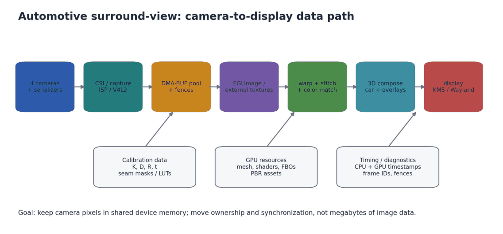
0.1A practical build-up sequence
If GPU programming is new to you, read Chapters 1-6 first and run a basic GLES triangle and textured-quad application. Then read the Linux DMA-BUF and YUV chapters and make one camera frame appear on screen with zero CPU copies. Only after that add four cameras, remap, stitching, offscreen passes, 3D/PBR, and performance tuning. The debugging chapter is useful from day one.
A good practical sequence is:
- Render a triangle and a 2D RGB texture.
- Render one camera image from a normal CPU upload to verify color and orientation.
- Replace the upload with DMA-BUF/EGLImage import.
- Add GPU timestamps and frame IDs.
- Render four camera textures without remap.
- Add one calibrated remap mesh per camera.
- Add masks and overlap blending.
- Add an offscreen stitched target.
- Add the 3D vehicle and overlays.
- Profile memory bandwidth, GPU time, CPU time, and end-to-end latency.
1The mental model: what the GPU actually does
Background: the concepts behind this chapter are explained in Camera, ISP, GPU and display: the graphics pipeline in one picture, immediate-mode versus tile-based GPUs. This chapter is the hands-on side.
A GPU is a massively parallel processor optimized for doing similar arithmetic on many vertices, fragments, or compute invocations. In classic OpenGL ES rendering, the CPU does not normally execute the drawing itself. The CPU builds state and resources, then records/submits commands to a graphics driver. The driver turns those commands into GPU work. The GPU can continue working while the CPU prepares the next frame.
This asynchronous nature is the first important difference from normal CPU code. A function such as glDrawElements() usually means “enqueue this draw” rather than “finish drawing now.” If you force completion with glFinish(), read back pixels, destroy/recreate resources, or map a buffer that the GPU is still using, you can destroy that parallelism.
1.1CPU side and GPU side
On the CPU side you typically do the following:
- receive metadata for a camera frame
- wait on or import synchronization primitives
- choose which GPU resources correspond to the current frame
- update small state such as transforms, exposure, seam weights, and vehicle animation
- bind programs, textures, buffers, and framebuffers
- issue draw calls
- submit/present the result
- release input buffers after the GPU no longer reads them
On the GPU side, hardware performs vertex processing, primitive assembly, rasterization, texture sampling, fragment shading, depth/stencil/blending, and writes render targets. Modern GPUs internally reorder or overlap some of these operations, so the conceptual pipeline is more useful than assuming a literal instruction-by-instruction implementation.
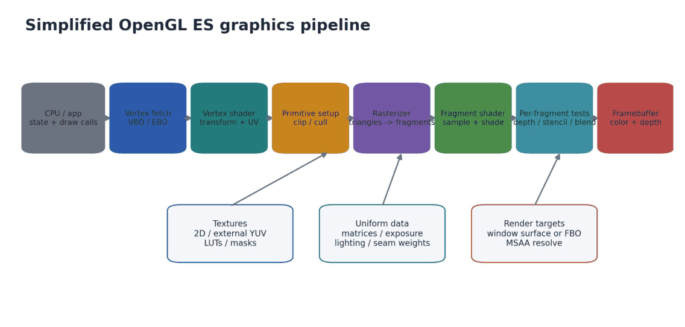
1.2A draw call in plain language
Assume you have a triangle mesh for a bird-eye surface. Each vertex contains a 3D position and a 2D texture coordinate. A draw call roughly means:
- Fetch vertex attributes from a vertex buffer.
- Run the vertex shader once for each vertex.
- Assemble vertices into triangles using the index buffer.
- Clip triangles to the view volume and optionally cull back faces.
- Rasterize each surviving triangle into pixel-sized fragments.
- Interpolate vertex outputs such as UV coordinates across the triangle.
- Run the fragment shader for the fragments.
- Sample textures, calculate the output color, perform tests/blending, and write the framebuffer.
For surround view, a useful simplification is: the vertex stage decides where the camera image goes; the fragment stage decides what color is sampled/blended at every visible output pixel.
1.3Why embedded GPUs feel different from desktop GPUs
Automotive SoCs share DRAM bandwidth among CPU cores, GPU, ISP, camera capture, display, video codecs, accelerators, and sometimes neural-network engines. Memory traffic is therefore often more important than raw arithmetic throughput.
TI TDA4VM/J721E uses an Imagination PowerVR Rogue 8XE GPU according to TI’s Processor SDK documentation [R10]. PowerVR is a tile-based deferred rendering architecture: the screen is divided into tiles and much intermediate work is kept in on-chip memory to reduce external memory traffic [R14]. That is why practices such as clearing attachments at the start, invalidating attachments that do not need to be stored, avoiding unnecessary full-screen intermediate buffers, and avoiding forced synchronization can have a large impact [R15].
Do not generalize every PowerVR rule to every NVIDIA or Renesas GPU. The universal lesson is to understand the target architecture and measure bandwidth as well as ALU utilization.
2OpenGL ES, EGL, and the window/display stack
Background: the concepts behind this chapter are explained in Camera, ISP, GPU and display: OpenGL ES, EGL and Vulkan, Linux, Wayland and NullWS. This chapter is the hands-on side.
OpenGL ES (GLES) is the rendering API. EGL is the platform interface that connects GLES to a native display/window system and manages contexts, surfaces, images, and synchronization. On embedded Linux, a third family of APIs usually appears below or beside EGL: DRM/KMS for display control, GBM for buffer allocation on some stacks, Wayland/Weston for composited window systems, V4L2 for cameras/video, and DMA-BUF for buffer sharing.
The Khronos registry lists OpenGL ES 3.2 as the current OpenGL ES core version and EGL 1.5 as the current EGL core version [R1][R2]. A driver may expose an older core version plus extensions, or a newer version but not the specific import extension you need. The version string alone is not enough.
2.1Practical API roles
The main APIs and subsystems have distinct jobs:
- OpenGL ES: draw/compute API - warp, blend, 3D car, UI, and post-processing.
- GLSL ES: shader language - vertex, fragment, and (ES 3.1+) compute shaders.
- EGL: context/surface/image/synchronization bridge - create the GLES context, import DMA-BUF as EGLImage, and swap/present through EGL.
- V4L2 or a vendor camera API: capture - acquire camera frames and their metadata.
- DMA-BUF: shared memory handle - exchange image storage between drivers or processes without copying pixel data through the CPU.
- DRM/KMS: Linux display modesetting - direct scanout, planes, page flips, connectors, CRTCs, and vblank.
- GBM: generic buffer manager - allocate buffers suitable for EGL/DRM on many Mesa-style stacks.
- Wayland/Weston: window/compositor layer - composed HMI/display path.
- Vendor APIs: SoC-specific media/safety/interoperability - for example NvSciBuf/NvSciSync, TI Vision Apps/OpenVX, or Renesas media blocks.
2.2Context, surface, and framebuffer are different things
An EGL context contains GLES state and is associated with GPU resources. An EGL surface is a rendering destination provided through EGL, often a native window or pbuffer. A GL framebuffer is the object GLES renders into. The default framebuffer is normally backed by the current EGL surface; an FBO is an application-created offscreen framebuffer.
This distinction matters when debugging. “The window is black” can mean the shader produced black, the FBO is incomplete, the wrong context is current, the swap happened on the wrong surface, the compositor is not showing the surface, or the KMS plane has a format/modifier problem.
2.3Typical initialization sequence
A portable simplified initialization looks like this:
EGLDisplay dpy = eglGetDisplay(...); // or eglGetPlatformDisplay(...)
eglInitialize(dpy, &major, &minor);
eglBindAPI(EGL_OPENGL_ES_API);
EGLConfig cfg = choose_config(dpy); // color/depth/MSAA/surface type
EGLContext ctx = eglCreateContext(
dpy, cfg, EGL_NO_CONTEXT,
(EGLint[]){ EGL_CONTEXT_MAJOR_VERSION, 3,
EGL_CONTEXT_MINOR_VERSION, 2,
EGL_NONE });
EGLSurface surface = create_window_or_pbuffer_surface(dpy, cfg, native_window);
eglMakeCurrent(dpy, surface, surface, ctx);Real code needs robust error checks, fallback versions, extension queries, configuration validation, and cleanup. On an automotive target, create resources at startup when possible rather than in the real-time frame path.
2.4Query, do not assume
At startup log at least:
printf("GL_VENDOR = %s\n", glGetString(GL_VENDOR));
printf("GL_RENDERER = %s\n", glGetString(GL_RENDERER));
printf("GL_VERSION = %s\n", glGetString(GL_VERSION));
printf("GLSL = %s\n", glGetString(GL_SHADING_LANGUAGE_VERSION));
printf("EGL_VERSION = %s\n", eglQueryString(dpy, EGL_VERSION));
printf("EGL_VENDOR = %s\n", eglQueryString(dpy, EGL_VENDOR));For GLES 3.x, enumerate extensions with glGetStringi(GL_EXTENSIONS, i) and GL_NUM_EXTENSIONS. Also enumerate EGL client and display extensions. Store the complete capability dump with the software version in bug reports.
Important extensions for a Linux camera-rendering pipeline commonly include:
- EGL_EXT_image_dma_buf_import - create an EGLImage from one or more DMA-BUF FDs [R5].
- EGL_EXT_image_dma_buf_import_modifiers - import/query tiling and compression modifiers [R6].
- GL_OES_EGL_image_external / GL_OES_EGL_image_external_essl3 - sample imported external images in GLES shaders where supported [R7].
- EGL_ANDROID_native_fence_sync or other native-fence mechanisms - explicit fence interop on stacks that expose it [R8].
- GL_KHR_debug - debug messages and object labels [R16].
- GL_EXT_disjoint_timer_query - asynchronous GPU timing where exposed [R17].
- GL_KHR_robustness / robust context support - detect/reset behavior where supported.
The absence of one extension does not necessarily make zero-copy impossible; the platform may expose a vendor-specific path. But it changes the adapter layer.
3GLES resource objects and how to use them
The GLES API is a state machine around objects. Efficient applications create stable objects, bind/update them deliberately, and avoid accidental state churn.
3.1Vertex Buffer Object (VBO)
A VBO stores per-vertex data such as position, normal, tangent, texture coordinates, seam weights, or camera IDs. A surround-view remap mesh can be static for the lifetime of a calibration. That means its VBO should normally be created once and never rewritten every frame.
For example:
struct Vertex {
float px, py, pz; // output/bowl position
float u, v; // camera texture coordinate
float blendWeight; // optional precomputed overlap weight
};Static geometry is usually uploaded with GL_STATIC_DRAW. The usage flag is a hint, not a strict contract, but it communicates intent to the driver.
3.2Element/Index Buffer Object (EBO/IBO)
An index buffer tells GLES which vertices form triangles. A regular remap grid shares vertices, so indexed drawing significantly reduces duplicated vertex data. Prefer 16-bit indices when the mesh has <=65,535 unique vertices and the representation allows it; 32-bit indices are supported in modern GLES but consume twice the index bandwidth.
3.3Vertex Array Object (VAO)
A VAO remembers vertex attribute setup and the element-buffer binding. Configure one VAO per mesh layout rather than repeating glVertexAttribPointer() calls every frame.
3.4Uniforms and UBOs
Uniforms are small shader parameters: matrices, exposure gain, seam control values, light parameters, frame flags. With ES 3.x, uniform buffer objects (UBOs) are useful for grouping stable blocks such as camera calibration or per-frame scene data.
A good split is:
- per-view: view/projection matrices, camera selection
- per-frame: exposure and white-balance corrections, animation state
- per-material: PBR factors and texture indices
- per-object: model transform
Do not upload a 4 MB lookup table as ordinary uniforms. Use textures, buffer textures if available, SSBOs (ES 3.1+), or static mesh attributes depending on the access pattern.
3.5Textures
Textures are not only photographs. They are generic read-only (for a draw) sampled images and tables. Surround view commonly uses:
- imported camera images
- alpha/seam masks
- 2D distortion/remap LUTs if using lookup-based remap
- stitched intermediate color targets
- vehicle base-color/normal/metallic-roughness textures
- environment maps for PBR
- fonts/icons/UI atlases
Choose internal formats intentionally. For example, masks rarely need RGBA8. One 8-bit channel may be enough. Metallic and roughness can be packed. Normal maps can often use compressed formats supported by the target.
3.6Framebuffer Objects (FBOs)
An FBO makes a texture or renderbuffer the output of a render pass. Typical uses are:
- render stitched surround view to an offscreen texture
- render a shadow map
- render an MSAA target and resolve it
- post-process color before the final display pass
- create a display-independent output for multiple screens
Always check completeness after setup:
GLenum s = glCheckFramebufferStatus(GL_FRAMEBUFFER);
if (s != GL_FRAMEBUFFER_COMPLETE) {
log_error("FBO incomplete: 0x%x", s);
}Do this during initialization, not every frame.
3.7Renderbuffers vs textures
A renderbuffer is optimized as an attachment and is not directly sampled like a texture. Use it for depth/stencil or multisample attachments that you only need during rendering. Use a texture when a later pass must sample the result.
3.8Shader programs and program binaries
Compile/link shaders at startup. Check every compile and link log even in release development builds. On embedded systems, runtime shader compilation can add startup latency and variability. Some platforms support program binaries (glGetProgramBinary / glProgramBinary or extensions), but cache compatibility is implementation-specific. Cache keys should include at least driver/GPU identity, shader source/version, build configuration, and any binary format identifier.
Do not assume a binary generated on a development BSP remains valid on another driver release.
4Drawing: state, batching, depth, blending, and ordering
The GPU can draw millions of fragments quickly, but the driver still processes API calls on the CPU. Excessive tiny draw calls and repeated state changes can become CPU-bound even when the GPU is mostly idle.
4.1A disciplined frame loop
A stable render loop looks like this:
while (running) {
FrameSet frames = acquire_camera_frames();
wait_or_import_input_fences(frames);
update_frame_uniforms(frames.metadata);
glBindFramebuffer(GL_FRAMEBUFFER, stitchFbo);
render_surround_meshes(frames);
glBindFramebuffer(GL_FRAMEBUFFER, finalFbo_or_default);
render_vehicle_pbr();
render_guidelines_and_ui();
submit_output_fence_if_needed();
present();
release_camera_frames_when_gpu_done(frames);
}Real production code should avoid blocking waits in the render thread where possible and use a ring of frame slots.
4.2Minimize state changes
State changes include program switches, framebuffer switches, blending modes, depth state, texture bindings, and vertex layout changes. They are not all equally expensive on every GPU, but grouping compatible work is a safe general rule.
For a simple surround-view render pass, four camera meshes can often use one shader program and one VAO layout, changing only the bound camera texture and per-camera data. Texture arrays or bindless-style mechanisms are platform-dependent; do not add complexity unless profiling shows draw-call overhead matters.
4.3Depth testing
For a pure 2D bird-eye composite, depth testing may be unnecessary. For a 3D bowl plus car model, depth is useful. Typical opaque 3D state:
glEnable(GL_DEPTH_TEST);
glDepthFunc(GL_LEQUAL);
glDepthMask(GL_TRUE);
glEnable(GL_CULL_FACE);
glCullFace(GL_BACK);Transparent overlays are usually rendered after opaque geometry with depth writes disabled.
4.4Blending
Standard alpha blending:
glEnable(GL_BLEND);
glBlendFunc(GL_SRC_ALPHA, GL_ONE_MINUS_SRC_ALPHA);Surround-view seam blending does not have to use fixed-function alpha blending. Often the fragment shader samples two cameras and explicitly computes the weighted color. That gives better control over masks, photometric correction, validity, and special seam logic.
4.5Clearing and invalidating
On tile-based renderers, clearing tells the driver that previous attachment contents are not needed; this can avoid loading old data from DRAM into tile memory. At the end of a pass, invalidate depth/stencil or other attachments if their contents will not be used later. Imagination explicitly recommends clear/invalidate patterns to reduce bandwidth on PowerVR [R15].
Example:
glBindFramebuffer(GL_FRAMEBUFFER, fbo);
glClear(GL_COLOR_BUFFER_BIT | GL_DEPTH_BUFFER_BIT);
...
GLenum discard[] = { GL_DEPTH_ATTACHMENT, GL_STENCIL_ATTACHMENT };
glInvalidateFramebuffer(GL_FRAMEBUFFER, 2, discard);Only invalidate data that is genuinely dead.
5Memory: CPU virtual memory, GPU addresses, DMA, caches, and IOMMUs
Background: the concepts behind this chapter are explained in Camera, ISP, GPU and display: memory, DMA and zero-copy. This chapter is the hands-on side.
The word “buffer” is overloaded. A camera buffer has several identities at once: physical pages, an IOMMU mapping for a device, a DMA-BUF object, one or more file descriptors, perhaps a CPU virtual mapping, an EGLImage, and a GL texture binding. These are different handles to related storage.
5.1Physical contiguity is not the same as virtual contiguity
A modern SoC with an IOMMU can often present scattered physical pages as a contiguous device address space. Some engines or legacy paths may require physically contiguous memory, while others only require an IOVA mapping. The allocator/heap must satisfy the strictest participating device.
Linux DMA-BUF heaps expose allocators such as a system heap and, when configured, CMA-backed heaps [R4]. Vendor systems may use proprietary allocators or reserved memory regions instead.
5.2What DMA-BUF gives you
DMA-BUF is a Linux framework for sharing buffer storage between devices, subsystems, and processes. A DMA-BUF is represented in userspace by a file descriptor. The kernel framework also integrates synchronization through dma_fence and reservation objects [R3].
A DMA-BUF FD does not by itself describe the image. You still need metadata:
- width and height
- pixel format/FourCC
- number of planes
- per-plane FD (may be the same FD)
- per-plane offset
- per-plane pitch/stride
- modifier (linear, tiled, compressed, vendor layout)
- color space and sample range
- chroma siting for subsampled YUV
- a synchronization mechanism or ownership protocol
If any of these are guessed, the image may look nearly correct while still being wrong.
5.3Stride/pitch
width is visible pixels. pitch (or stride) is bytes between the start of row N and row N+1. A 1920-pixel 8-bit luma line could have a stride of 1920, 1984, 2048, or another aligned value. Padding is normal.
Always calculate addresses as:
address(x, y) = plane_base + y * pitch + x * bytes_per_sample_or_elementnot as y * width unless the producer explicitly guarantees that layout.
5.4Format modifiers
A FourCC tells you the logical component layout. A DRM format modifier tells you additional memory-layout details such as tiling or compression. EGL_EXT_image_dma_buf_import_modifiers exists specifically because a FourCC alone is insufficient for many modern GPU/display layouts [R6]. DRM framebuffer metadata similarly carries per-plane pitches, offsets, and modifiers [R9].
A common integration mistake is to export a tiled camera/graphics buffer and import it as if it were linear. The result may be scrambled blocks, periodic corruption, or import failure.
5.5CPU mapping and cache coherency
If the CPU maps a DMA-BUF and writes/reads it, cache maintenance rules matter. Linux documents DMA_BUF_IOCTL_SYNC for CPU access, but it is primarily about cache coherency; it does not replace synchronization with a GPU or other device [R3].
In a zero-copy camera-to-GPU path, the best solution is usually: do not map the pixel payload on the CPU at all. Keep only metadata on the CPU. This avoids cache pollution and accidental synchronization.
5.6Buffer pools and allocation policy
Allocate pools once. A typical design has:
- camera capture ring buffers
- imported EGLImage/GL object wrappers for every capture slot
- one or more stitch output FBO slots
- display/present buffers
- static 3D assets and lookup tables
Avoid malloc, new, GL texture creation, EGLImage creation/destruction, and DMA-BUF allocation inside the steady-state frame loop. Reusing objects improves determinism and avoids fragmentation.
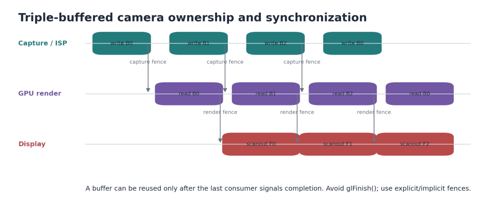
6Synchronization: the hardest part of zero-copy pipelines
Background: the concepts behind this chapter are explained in Camera, ISP, GPU and display: fences, queues, buffer counts and latency. This chapter is the hands-on side.
Zero-copy is not “no synchronization.” It usually requires more explicit ownership discipline because the same memory moves between hardware engines without a CPU copy acting as an accidental barrier.
6.1Producer and consumer
For a camera frame:
- the capture/ISP is the producer
- the GPU is a consumer while rendering
- the buffer cannot be returned to capture until the GPU has finished reading it
For an offscreen render target used by display:
- the GPU is the producer
- the display engine/compositor is the consumer
- the GPU cannot render into the buffer again while it is still being scanned out unless the pipeline explicitly supports it
6.2Implicit synchronization
With implicit synchronization, drivers attach fences to shared buffers and participating subsystems wait automatically. This is convenient but can hide stalls. Linux DMA-BUF documents reservation/fence mechanisms for implicit ordering [R3].
Never assume implicit synchronization works across every vendor API combination. Camera, GPU, and display drivers may have different models.
6.3Explicit synchronization
With explicit synchronization, the producer returns a fence representing “write complete.” The consumer waits on it, then produces a new fence representing “read complete.” This makes ownership visible and supports precise pipelining.
On some EGL/Linux stacks, EGL_ANDROID_native_fence_sync bridges EGL synchronization with native fence FDs [R8]. NVIDIA DRIVE commonly uses NvSciSync alongside NvSciBuf for cross-engine synchronization [R12]. Exact mechanisms differ, but the lifecycle is conceptually identical.
6.4Why glFinish() is usually the wrong fix
glFinish() waits until all previously issued GL work completes. It can make a race disappear, which tempts developers to leave it in. But it serializes CPU and GPU and can collapse a pipeline from 60 FPS to a much lower rate. PowerVR guidance explicitly warns against unnecessary synchronization such as glFinish, synchronous waits, and framebuffer readback [R18].
Use a fence associated with the specific resource or frame instead.
6.5Ring-buffer state machine
A useful buffer-slot state machine is:
FREE -> CAPTURE_WRITING -> CAMERA_READY -> GPU_READING -> GPU_DONE -> FREEFor a display target:
FREE -> GPU_WRITING -> RENDER_READY -> DISPLAY_READING -> PRESENT_DONE -> FREEStore the frame ID and timestamps in the slot structure. Never let only “buffer index 0/1/2” identify a frame in logs; ring indices repeat.
7YUV, NV12, NV16, range, and color conversion
Background: the concepts behind this chapter are explained in Camera, ISP, GPU and display: pixel formats, stride and memory layout. This chapter is the hands-on side.
Automotive cameras usually do not arrive as RGBA. They often use YUV formats because luma/chroma representation is efficient for camera and video hardware.
7.1NV16 layout
NV16 is 8-bit YUV 4:2:2 semi-planar. The Y plane has one byte per pixel. The second plane stores interleaved Cb/Cr samples; each CbCr pair corresponds to two horizontal luma samples. Unlike NV12 (4:2:0), NV16 has a chroma row for every luma row. Linux V4L2 documents this layout explicitly [R19].
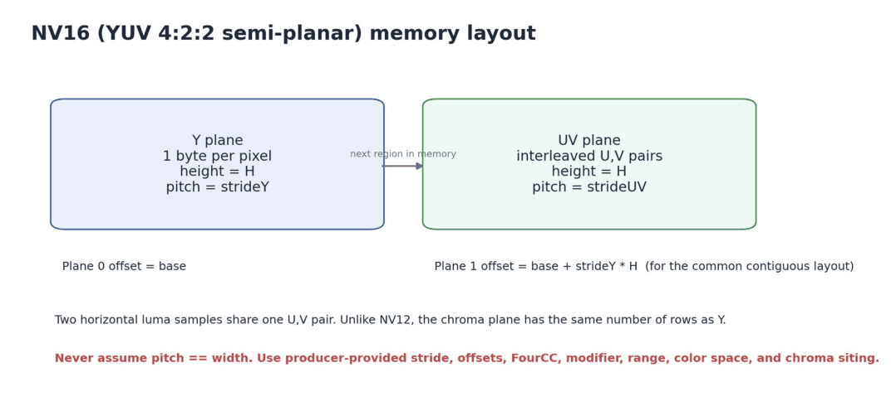
For a common contiguous layout with equal luma/chroma stride:
Y_size = strideY * H
UV_size = strideUV * H
frame_size = Y_size + UV_size
Y_offset = base
UV_offset = base + Y_sizeDo not hardcode UV_offset = W*H; use the actual pitch.
7.2Color space is separate from memory layout
“NV16” does not tell you whether the RGB conversion should use BT.601, BT.709, or BT.2020 coefficients, nor whether samples are full range or limited/narrow range. EGL_EXT_image_dma_buf_import includes YUV color-space, sample-range, and chroma-siting hints precisely because the memory FourCC does not define these semantic properties [R5].
If colors look washed out, too dark, too saturated, or skin/road colors are shifted, check:
- U/V order (NV16 versus NV61)
- range (full versus limited)
- BT.601 versus BT.709
- whether the shader/driver already performs conversion
- whether gamma/sRGB transfer is applied correctly
- chroma siting and filtering
7.3Manual YUV-to-RGB conversion
If the GPU exposes Y and UV as separately sampled planes, conversion can be done in the fragment shader. A conceptual limited-range conversion is:
float Y = sampleY - yOffset;
vec2 C = sampleUV - vec2(0.5);
vec3 rgb = M * vec3(Y, C.x, C.y);The matrix M and offsets depend on the standard and normalization. Use a tested conversion implementation and unit-test known color bars. Do not copy a random internet matrix without checking its range assumptions and U/V order.
7.4External textures
If an EGLImage represents a native YUV image and the driver supports external-image sampling, you may bind it to GL_TEXTURE_EXTERNAL_OES and use a samplerExternalOES shader. The implementation may perform YUV conversion during sampling. This is convenient and can use dedicated hardware, but it also means conversion details are partly controlled by EGL attributes/driver behavior.
Conceptual binding:
glBindTexture(GL_TEXTURE_EXTERNAL_OES, tex);
glEGLImageTargetTexture2DOES(GL_TEXTURE_EXTERNAL_OES, image);Shader:
#version 300 es
#extension GL_OES_EGL_image_external_essl3 : require
precision mediump float;
uniform samplerExternalOES cameraTex;
in vec2 uv;
out vec4 outColor;
void main() {
outColor = texture(cameraTex, uv);
}Check extension support and the platform’s exact format restrictions.
8DMA-BUF -> EGLImage -> GLES texture
Background: the concepts behind this chapter are explained in Camera, ISP, GPU and display: EGLImage, the zero-copy path into the GPU. This chapter is the hands-on side.
EGL_EXT_image_dma_buf_import allows creating an EGLImage from Linux DMA-BUF FDs. The image is described with a DRM FourCC plus per-plane FD, offset, and pitch [R5]. The modifier extension adds per-plane modifier data and query functions [R6].
8.1Conceptual import for a two-plane NV16 image
The following is deliberately pseudocode-like: names/types vary between core EGL 1.5 and KHR entry points and you must load extension functions correctly.
EGLint attrs[] = {
EGL_WIDTH, width,
EGL_HEIGHT, height,
EGL_LINUX_DRM_FOURCC_EXT, DRM_FORMAT_NV16,
EGL_DMA_BUF_PLANE0_FD_EXT, fd,
EGL_DMA_BUF_PLANE0_OFFSET_EXT, yOffset,
EGL_DMA_BUF_PLANE0_PITCH_EXT, yPitch,
EGL_DMA_BUF_PLANE1_FD_EXT, fd,
EGL_DMA_BUF_PLANE1_OFFSET_EXT, uvOffset,
EGL_DMA_BUF_PLANE1_PITCH_EXT, uvPitch,
EGL_YUV_COLOR_SPACE_HINT_EXT, EGL_ITU_REC709_EXT,
EGL_SAMPLE_RANGE_HINT_EXT, EGL_YUV_NARROW_RANGE_EXT,
EGL_NONE
};
EGLImageKHR image = eglCreateImageKHR(
display,
EGL_NO_CONTEXT,
EGL_LINUX_DMA_BUF_EXT,
NULL,
attrs);The same FD can legitimately describe multiple planes at different offsets. The application retains FD ownership; EGL holds references to the DMA-BUF storage according to the extension semantics [R5].
If the buffer uses a modifier, add the low/high 32-bit modifier attributes for each plane. Better still, query supported format/modifier combinations before deciding your allocation/import path.
8.2Import once per pool slot
If capture reuses a fixed set of DMA-BUF allocations, create the EGLImage and GL texture wrapper once for each slot during initialization. When frame N arrives, only choose the wrapper corresponding to the slot. Recreating EGLImages each frame adds CPU overhead and may fragment driver resources.
8.3Import failure checklist
If eglCreateImage fails:
- Call eglGetError() immediately.
- Verify the EGL extension is actually present on the EGLDisplay, not merely in a header file.
- Check the DRM FourCC, not a V4L2-only FourCC with a different numeric meaning.
- Check every pitch and offset.
- Check modifier support.
- Check the width/height constraints and alignment.
- Check whether the buffer is protected/secure and whether the consumer context may access it.
- Check the FD is valid in the importing process and has not been closed too early.
- Test one known linear RGB DMA-BUF to isolate YUV-specific issues.
- Query driver debug logs and enable EGL_KHR_debug/GL_KHR_debug where available.
9Worked example: four NV16 cameras in one shared allocation
This is a common source of confusion because “one quad buffer” can mean several layouts. You must first define the producer’s memory contract.
9.1Layout A: camera-major contiguous frames
Assume one DMA-BUF FD contains four complete NV16 frames one after another:
[cam0 Y][cam0 UV][cam1 Y][cam1 UV][cam2 Y][cam2 UV][cam3 Y][cam3 UV]Assume:
W = camera width
H = camera height
strideY = producer-provided luma pitch
strideUV = producer-provided chroma pitch
cameraBytes = strideY*H + strideUV*HThen:
camBase(i) = i * cameraBytes
Y_offset(i) = camBase(i)
UV_offset(i) = camBase(i) + strideY*H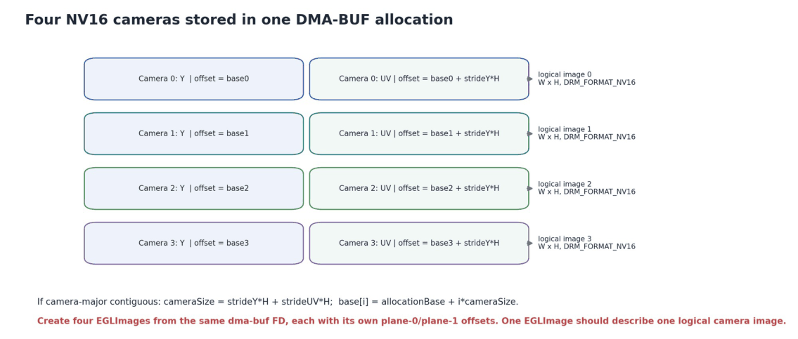
Create four logical EGLImages, each with logical width W, height H, FourCC DRM_FORMAT_NV16, and the same DMA-BUF FD but different plane offsets. Conceptually:
for (int i = 0; i < 4; ++i) {
size_t base = i * cameraBytes;
ImageDesc d = {
.width = W,
.height = H,
.fourcc = DRM_FORMAT_NV16,
.fd0 = quadFd,
.offset0 = base,
.pitch0 = strideY,
.fd1 = quadFd,
.offset1 = base + strideY * H,
.pitch1 = strideUV,
.modifier = modifier,
};
eglImage[i] = import_dma_buf(d);
}This works only if the driver accepts the offsets/alignment and format/modifier combination. The EGL dma-buf import specification allows per-plane FDs, offsets, and pitches and allows the same underlying DMA-BUF to back planes [R5].
9.2Why not one EGLImage with eight planes?
An NV16 image has two planes. Four independent NV16 cameras therefore contain eight logical plane regions. An EGLImage describes one logical image format, and the standard dma-buf import path supports the planes required by that image format (with modifier extension support up to four described planes). It is not a general “array of four unrelated NV16 images” container.
Represent each camera as one logical image, even if storage happens to be shared.
9.3Layout B: all luma planes followed by all chroma planes
Some producers could use:
[cam0 Y][cam1 Y][cam2 Y][cam3 Y][cam0 UV][cam1 UV][cam2 UV][cam3 UV]Then the offsets are different. Let:
Ybytes = strideY*H
UVbytes = strideUV*H
allY = 4*Ybytes
Y_offset(i) = i*Ybytes
UV_offset(i) = allY + i*UVbytesThe import approach is still four EGLImages. Only metadata changes.
9.4Layout C: one 2x2 atlas image
Another meaning of “quad buffer” is one giant logical NV16 image of size 2W x 2H, where cameras occupy quadrants. In this case it can be imported as one image if the producer truly describes a single valid NV16 atlas with consistent row layout.
You can sample each quadrant using adjusted texture coordinates, but be careful:
- texture filtering can sample across quadrant boundaries
- chroma coordinates must match the atlas layout
- borders/padding may be needed to prevent bleeding
- independent camera color-space metadata is impossible if cameras differ
- separate camera transforms become less explicit
For engineering clarity, per-camera logical images are often preferable even when the physical allocation is shared.
9.5Numerical memory example
For 1920x1080 NV16 with strideY = strideUV = 1920:
Y = 1920 * 1080 = 2,073,600 bytes
UV = 1920 * 1080 = 2,073,600 bytes
camera = 4,147,200 bytes ~= 3.96 MiB
4 cameras = 16,588,800 bytes ~= 15.82 MiBA three-deep capture pool therefore consumes about 47.46 MiB before any stitched output, 3D texture, depth buffer, driver allocation, or display buffer.
If stride is 2048 instead:
camera = 2048 * 1080 * 2 = 4,423,680 bytes ~= 4.22 MiB
4 cameras * 3 slots ~= 50.63 MiBThis shows why pitch must be included in RAM budgets.
9.6Synchronization for the shared allocation
If all four cameras share one DMA-BUF object, synchronization granularity may also become shared at the DMA-BUF reservation level. If each camera can complete independently but the buffer is treated as one object, implicit synchronization could serialize more than necessary. This is platform/driver dependent.
Ask the producer/API:
- Is the entire quad buffer released atomically as one frame set?
- Is there one completion fence or one per camera?
- Can the four camera regions be reused independently?
- Does the GPU import create references that keep the allocation alive?
- Is frame synchronization across cameras guaranteed (same exposure epoch)?
For surround view, a coherent four-camera frame set is often more important than maximizing per-camera concurrency.
10Surround-view calibration, projection, remap, and stitching
The GPU only renders the mapping you give it. Geometric quality mostly depends on calibration and the chosen projection model.
10.1Coordinate spaces
A typical system has:
- sensor/image coordinates - pixel positions in each camera
- normalized camera coordinates - after intrinsic normalization
- camera coordinate frame - 3D rays relative to a camera
- vehicle coordinate frame - cameras positioned around the car
- ground/bowl world surface - surface onto which images are projected
- view/camera for the virtual renderer - top-down or 3D orbit view
- clip/NDC/screen coordinates - standard graphics output spaces
Keep these transformations explicit. Name matrices with source and destination, for example T_vehicle_from_cam, rather than ambiguous extrinsic.
10.2Intrinsics and distortion
A pinhole camera uses intrinsic parameters such as focal lengths and principal point. Fisheye cameras need a distortion model. Common models include polynomial fisheye, Kannala-Brandt-like formulations, equidistant/equisolid mappings, or vendor-specific calibration models.
The GPU does not care which model was used if you precompute final UV coordinates. This is one reason mesh-based remap is attractive on embedded systems.
10.3Mesh-based remap
Create a mesh in the output domain (flat ground plane or 3D bowl). For each mesh vertex:
- take its 3D point in vehicle coordinates
- transform it into the selected camera coordinate frame
- project through the calibrated lens model
- obtain source image (u,v)
- mark invalid vertices/regions
- store the UV plus blend weight/camera ID as vertex attributes
At runtime the vertex shader transforms the mesh to the virtual view, and the rasterizer interpolates UVs. The fragment shader samples the camera texture.
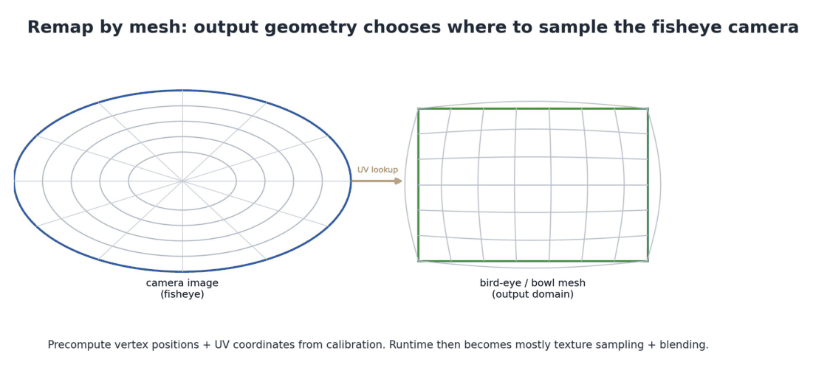
Advantages:
- low runtime math
- easy to update after calibration change
- compatible with GLES 2/3 style pipelines
- interpolation is handled by hardware
- can combine mask/blend weights with geometry
Trade-off: coarse meshes approximate a nonlinear distortion with linear interpolation inside triangles. Increase tessellation where distortion curvature is high or where seam alignment is sensitive.
10.4LUT-based remap
Another approach renders a full-screen/output mesh and uses a remap texture where each output pixel stores source UV coordinates. The fragment shader samples the UV map and then the camera image.
Advantages:
- exact per-pixel mapping at LUT resolution
- simple geometry
Costs:
- extra texture read(s)
- potentially large LUT memory
- bandwidth pressure
- care with precision (RG16F/RG32F versus normalized integer encodings)
For a static surround-view calibration, a sufficiently dense mesh is often more bandwidth-efficient. Measure on the target.
10.5Choosing which camera covers a point
A ground/bowl point can be visible in multiple cameras. Precompute a validity mask based on field of view and projection. In overlaps, assign two contributors and a weight. Avoid abrupt binary camera selection unless seams are acceptable.
10.6Seam blending
Simple linear feathering:
C = w * C_A + (1 - w) * C_Bwhere w varies smoothly across the overlap. The weight can be precomputed from distance to seam boundaries or generated from masks.
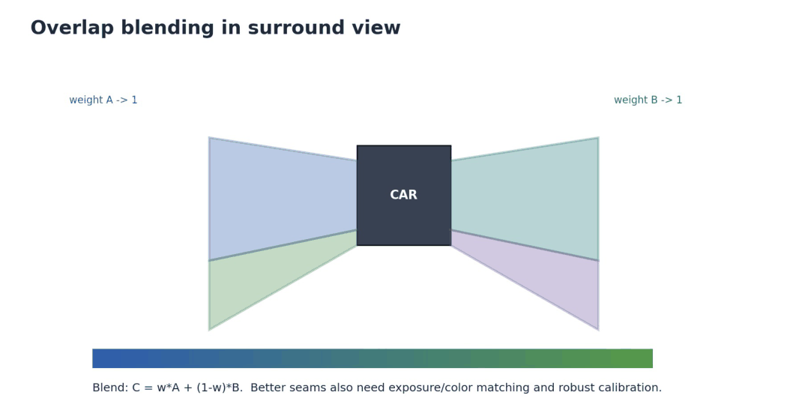
Better systems add:
- exposure normalization
- white-balance/color correction
- gain compensation per camera and sometimes spatially varying gain
- seam placement in low-gradient regions
- temporal smoothing so seam behavior does not flicker
- robust handling of invalid/occluded pixels
- multiband blending when bandwidth and latency budgets allow
No blending algorithm can fully hide a bad geometric calibration. Fix calibration first.
10.7Moving objects and parallax
A flat ground projection assumes scene points lie on the chosen surface. Cars, curbs, pedestrians, poles, and walls do not. Each camera sees them from a different viewpoint, producing double images or stretched geometry near seams.
A 3D bowl reduces some visual artifacts by assigning non-ground regions to rising geometry, but it does not reconstruct true scene depth. More advanced systems use depth/optical flow/seam selection, but those add compute and failure modes. Define the acceptable behavior for safety-relevant obstacles.
10.8Photometric correction
A practical model per camera may be:
rgb_corrected = M3x3 * rgb + bias
rgb_final = gain(x,y) * rgb_correctedDo corrections in a consistent color space. Exposure/gain changes should be temporally filtered; abrupt per-frame changes make seams pulse.
11Offscreen rendering and render graphs
An offscreen pass renders to an FBO-backed texture instead of directly to the display surface.
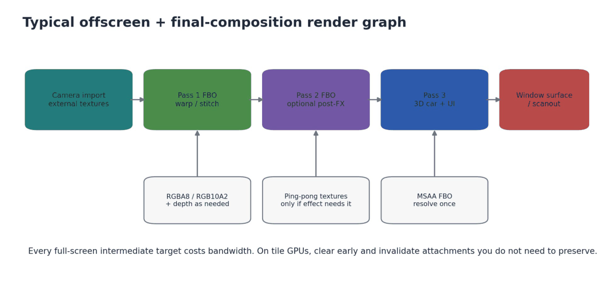
11.1Why render offscreen
Use an offscreen target when you need to:
- stitch cameras once and then reuse the result in a 3D scene
- apply post-processing
- resolve MSAA
- send the same result to more than one output
- separate surround-view rendering from UI/compositor timing
- capture/encode the result without reading pixels back to the CPU
11.2Why not render everything through many FBOs
Every full-resolution intermediate that must be stored to and later read from DRAM costs bandwidth. At 1920x1080 RGBA8:
one image = 1920 * 1080 * 4 ~= 7.91 MiBWriting then reading that image once is roughly 15.8 MiB of traffic before considering cache effects, blending, MSAA, or compression. At 60 FPS that single write+read path represents roughly 0.95 GiB/s of raw payload traffic. Multiple passes add quickly.
Tile-based GPUs may keep some attachment work on-chip within a render pass, but separate GL passes/FBO dependencies can force storage. Profile actual external bandwidth if the platform exposes counters.
11.3Direct-to-final rendering
If you can render the four camera meshes, car model, and UI directly into the final framebuffer in correct order, that may be the lowest-bandwidth design. An intermediate stitched texture is worthwhile when it enables reuse or simplifies another necessary pass.
11.4MSAA FBOs
Multisample anti-aliasing typically renders to multisampled color/depth attachments and then resolves to a single-sample texture/default framebuffer. Avoid resolving multiple times. If only the 3D car edges need MSAA, consider whether camera imagery can bypass expensive multisampling.
12Anti-aliasing, filtering, and image quality
“Anti-aliasing” covers several different artifacts. Choose the method for the actual problem.
12.1Geometry edge aliasing
MSAA reduces jagged polygon edges by evaluating coverage at multiple samples. It is effective for the silhouette of a 3D vehicle and lane/guideline geometry. It does not automatically remove aliasing inside camera textures.
Costs:
- larger multisample attachments
- extra bandwidth/storage depending on architecture
- resolve operation
- potentially higher fragment/depth work
2x or 4x MSAA is often a reasonable embedded starting point. Test both quality and bandwidth.
12.2Texture minification aliasing
If a camera texture is displayed smaller than one source texel per screen pixel, simple bilinear sampling can shimmer. Mipmaps are the classic solution for static textures, but camera frames change every frame and generating a full mip chain may be too costly. Alternatives include:
- hardware scaler before GPU if available
- a carefully chosen lower-resolution camera stream for the view
- anisotropic filtering if available/appropriate
- prefiltered/remap outputs
- custom reconstruction only where needed
For a bird-eye projection, source footprint can vary strongly across the mesh. Measure quality near the image periphery.
12.3Remap interpolation
Bilinear filtering is usually preferable when sampling camera imagery. GL_NEAREST makes distortion grids look blocky and can emphasize chroma sampling artifacts. However, filtering near invalid borders can pull in black/garbage texels. Use a valid border, clamp strategy, mask, or carefully placed UVs.
12.4FXAA/SMAA/TAA
Post-process AA such as FXAA is cheap and can smooth final edges but may blur image detail. Temporal AA (TAA) is much more complex in a camera-centric surround view because the camera image itself changes and contains real motion. It can cause ghosting and is usually not the first choice for a safety/parking view.
12.5Alpha-to-coverage
For thin alpha-tested 3D geometry, alpha-to-coverage with MSAA can improve edges. It is more relevant to 3D assets than to the camera stitch.
133D car rendering and PBR
A surround-view product often places a rendered vehicle model at the center. A simple unlit model is cheap; a polished PBR model can consume substantial texture memory and fragment cost. The right level depends on display size, product expectations, and GPU budget.
13.1OBJ versus glTF
OBJ is simple and widely supported. It stores geometry plus a material description via MTL, but has no standardized modern PBR pipeline, compact binary packaging, node hierarchy, animation, or rich extension system.
glTF 2.0 is designed as a runtime delivery format. It supports scenes/nodes, meshes, accessors/buffers, textures, skins, animations, cameras, and a standardized metallic-roughness PBR material model [R20]. Binary .glb packages JSON and binary payload in one file.
For an automotive 3D vehicle, glTF/GLB is normally the better long-term asset format unless an existing toolchain is strongly OBJ-based.
13.2glTF core PBR material
The metallic-roughness model uses:
- base color
- metallic factor/texture
- roughness factor/texture
- normal texture
- occlusion texture
- emissive color/texture
- alpha mode
The glTF specification packs roughness in the green channel and metallic in the blue channel of the metallic-roughness texture, and defines base-color textures in sRGB while metallic/roughness values are linear [R20].
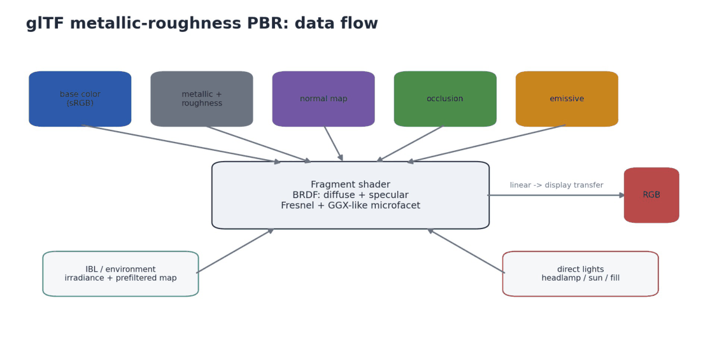
13.3Simplified PBR pipeline
For each fragment of the car:
- sample base color and convert from sRGB to linear
- sample normal map and build the world/view-space normal
- sample metallic and roughness
- evaluate direct lights and/or image-based lighting (IBL)
- combine diffuse and specular BRDF terms
- apply occlusion/emissive
- tone-map if using HDR values
- apply output transfer function for the display
A typical metallic-roughness BRDF uses a GGX/Trowbridge-Reitz-like normal distribution, Smith masking/shadowing, and Schlick-style Fresnel. You do not need a feature-film renderer for a small central car model. A carefully simplified mobile PBR implementation often looks excellent.
13.4Image-based lighting
IBL is useful because a vehicle looks unnatural if lit only by one hard directional light. A common setup uses:
- low-frequency irradiance cubemap for diffuse environment light
- prefiltered environment cubemap with mip levels for specular roughness
- 2D BRDF lookup texture
These can be precomputed offline. Keep environment-map resolution modest on embedded targets.
13.5Texture compression
For static 3D assets, use a GPU-native compressed format supported by the target, such as ETC2/EAC or ASTC where available. TI’s TDA4VM documentation lists ETC support and numerous texture formats/extensions on its PowerVR stack [R10]. Compression reduces flash size, RAM footprint, and bandwidth, but transcoding at boot may trade flash for startup time.
Use KTX/KTX2 as an asset container when it fits the toolchain. Do not JPEG-compress normal/metallic textures and then decompress to huge RGBA buffers at runtime without accounting for peak RAM.
13.6Mesh optimization
For the car model:
- remove invisible interior geometry
- generate LODs if the model appears at multiple sizes
- merge tiny submeshes sharing material
- quantize positions/normals when quality allows
- use 16-bit indices when possible
- generate tangents offline
- avoid per-frame CPU skinning if there is no animation
- keep material count small
The car is typically close to the center and occupies a predictable number of pixels, so you can design assets to the actual screen resolution rather than desktop game-engine budgets.
14Display paths: EGL surface, Wayland/Weston, DRM/KMS, and direct scanout
Background: the concepts behind this chapter are explained in Camera, ISP, GPU and display: the display path, Wayland and running without a window system. This chapter is the hands-on side.
After rendering, pixels still have to reach the display controller.
14.1Wayland/Weston path
A typical composited path is:
GLES app -> EGL window surface -> Wayland buffer -> Weston compositor -> DRM/KMS -> displayBenefits:
- easy integration with HMI/windows
- multiple clients and overlays
- standardized window management
Costs can include compositor composition, extra queueing, and another frame of latency if presentation timing is not configured well. A compositor may still use direct scanout when a surface meets constraints, but do not assume it.
TI documents Wayland/Weston and also null-window/KMS/DRM/EGLFS style paths for TDA4VM [R10]. NVIDIA documents both window-system and EGLDevice-style sample paths in DRIVE OS [R13].
14.2Direct DRM/KMS path
KMS exposes framebuffers feeding planes, which feed a CRTC and ultimately connectors/display output [R21]. Atomic modesetting lets userspace update plane/framebuffer state transactionally.
A direct-render/display design may be:
GPU renders GBM/EGL buffer -> KMS framebuffer -> plane -> CRTC -> connectorThis can reduce compositor overhead and gives more direct vblank/page-flip control, but it increases system responsibility: display ownership, mode setting, hotplug behavior, plane constraints, synchronization, and recovery are now yours.
14.3Overlay planes
Some display controllers can composite multiple hardware planes: e.g., camera background plus a graphics overlay. This can avoid GPU composition in some designs. But plane format, scaling, z-order, alpha, and modifier capabilities are hardware-specific. It may also complicate screenshots or color management.
14.4Vsync and frame pacing
If presentation is synchronized to a 60 Hz display, a frame budget is 16.67 ms. Missing a vblank can cause the frame to remain visible for another refresh, effectively adding ~16.67 ms and causing a 30 FPS-looking cadence even if average GPU time is slightly above budget.
FPS alone hides this. Measure frame-time distribution and missed presents.
15Measuring FPS, GPU time, CPU time, and latency
A performance investigation should answer four different questions:
- How often do frames reach the display? (presented FPS)
- How long does the CPU spend preparing/submitting a frame?
- How long is the GPU busy for the relevant render work?
- How long from camera exposure/capture to visible display? (end-to-end latency)
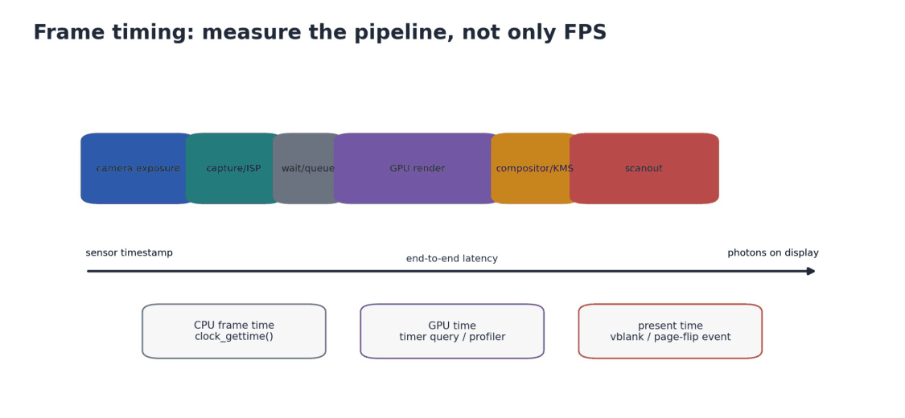
15.1CPU frame time
Use a monotonic clock around CPU code:
clock_gettime(CLOCK_MONOTONIC_RAW, &t0);
render_frame();
clock_gettime(CLOCK_MONOTONIC_RAW, &t1);But remember: this measures how long CPU submission took, not when the GPU finished.
Record percentiles, not only average:
- median (P50)
- P90/P95
- P99
- maximum during the test window
Automotive UI quality is often dominated by periodic spikes rather than average speed.
15.2FPS
Count completed/presented frames over a window of at least one second:
fps = frames_presented / elapsed_secondsAlso record inter-present intervals. A sequence 16, 16, 33, 16, 16, 33 ms can average near 50 FPS but visibly stutters.
15.3GPU timer queries
Where GL_EXT_disjoint_timer_query is supported, use asynchronous query objects around meaningful passes. The extension was designed specifically to measure GPU execution without forcing pipeline completion [R17].
Do not immediately read the result after glEndQuery; that can stall. Keep a ring of query objects and read results from older frames after QUERY_RESULT_AVAILABLE is true. Check the GPU_DISJOINT_EXT state before trusting results.
15.4Avoid using glFinish() for profiling
glFinish() makes CPU timers appear to measure GPU completion, but it changes the workload by preventing overlap. Use GPU queries/profilers unless you are doing a narrowly controlled diagnostic.
15.5End-to-end camera-to-display latency
Best practice is to propagate a frame ID and timestamps across modules:
sensor/capture timestamp
ISP done timestamp
GPU submit timestamp
GPU done timestamp
present/page-flip timestamp
(optional photodiode/display measurement)The final display scanout timestamp is not the same as when the first/last pixel becomes visible. For strict latency measurement, external instrumentation such as LED/photodiode/high-speed camera can validate software timestamps.
15.6Bandwidth estimate
Raw bandwidth estimates catch impossible designs early. For any full-frame resource:
bytes_per_frame = pitch_or_width * height * bytes_per_pixel * planes_factor
bandwidth = bytes_per_frame * accesses_per_frame * FPSThis is only a lower-order estimate: caches, compression, tiling, read-modify-write blending, MSAA, texture footprints, and internal traffic change reality. Use hardware counters for final tuning.
16Debugging GPU problems systematically
Background: the concepts behind this chapter are explained in Camera, ISP, GPU and display: symptom atlas, black-screen triage. This chapter is the hands-on side.
Randomly changing shader code is inefficient. First classify the failure.
16.1Start with a deterministic debug build
Enable:
- GL_KHR_debug callback if supported [R16]
- EGL error checks after initialization/import calls
- shader compile/link logs
- glCheckFramebufferStatus at resource setup
- object labels (glObjectLabel) for textures, buffers, programs, and FBOs
- frame IDs and buffer-slot IDs in logs
- optional debug markers around render passes
Do not call glGetError() after every GL function in production; it adds overhead and can perturb timing. In development, wrap groups of calls or use the debug callback.
16.2Black screen checklist
Work from output backward:
- Is the display/connector active?
- Is the window/surface visible and the correct size?
- Does eglSwapBuffers/page flip succeed?
- Is the correct framebuffer bound?
- Is viewport non-zero and correct?
- Clear to an obvious color. Does it appear?
- Draw a hard-coded triangle with no texture.
- Draw a known RGB test texture.
- Only then introduce imported YUV camera textures.
- This isolates display, GLES, and camera integration.
16.3Geometry missing
Check:
- wrong matrix convention or row/column multiplication
- object behind near/far plane
- incorrect winding/culling
- depth buffer not cleared
- depth function/state left from previous pass
- attribute stride/offset mismatch
- wrong index type/count
- NaN in vertex shader
- viewport/scissor state
Disable culling and depth temporarily. Render normals/UVs as colors.
16.4Texture corrupted or shifted
Check:
- pitch/offset/plane order
- FourCC mismatch
- modifier mismatch
- use-after-release of camera buffer
- wrong texture target
- producer still writing when GPU samples
- imported image dimensions
- crop rectangle/orientation
- row alignment for CPU uploads (GL_UNPACK_ALIGNMENT)
A corruption pattern repeating every N pixels strongly suggests pitch/alignment.
16.5Wrong colors
Check the YUV list in Chapter 7. A good diagnostic is a generated YUV color-bar frame with known expected RGB results. Compare sampled pixel values offline and on GPU.
16.6One-frame flicker or occasional old frame
This is frequently synchronization/ownership, not a shader issue. Log:
frameId, camera slot, camera fence, GPU submit id, GPU fence, present idIf a buffer slot is reused before the GPU signals completion, visual output may be correct 99.9% of the time and fail under load.
16.7GPU hang or timeout
Potential causes include:
- invalid resource lifetime
- driver bug triggered by unsupported import/modifier combination
- extremely long shader/compute workload
- context reset/hardware fault
- memory pressure/IOMMU mapping failure
- synchronization deadlock
Collect kernel logs, driver logs, GPU fault information, and a minimal reproducer. Robustness extensions may report context reset depending on the stack.
16.8Frame debugger/profiler tools
On NVIDIA DRIVE, Nsight Graphics supports frame debugging/profiling for OpenGL/OpenGL ES among other APIs, and Nsight Systems can trace CPU/GPU activity [R22][R23]. NVIDIA’s current DRIVE documentation recommends Vulkan SC for automotive production graphics and treats GLES as a supported development/prototyping API in that guidance [R24]. Follow the product’s safety requirements.
On TI TDA4VM, TI documents PowerVR tools including PVRTune and PVRCarbon for profiling/tracing graphics activity [R10]. Imagination’s current developer suite also documents PowerVR architecture and tools [R14]. Tool versions need to match the target driver stack.
On generic Linux/Mesa stacks, tools may include perf, ftrace, DRM debugfs, RenderDoc (support varies by GLES/window path), apitrace, Mesa HUD/perf counters, and vendor profilers. Validate target compatibility before relying on them.
17Performance optimization: find the bottleneck first
A GPU application can be CPU/driver-bound, vertex-bound, fragment-bound, texture/bandwidth-bound, synchronization-bound, or display-limited. The optimization is different for each.
17.1CPU/driver-bound symptoms
- low GPU utilization
- CPU render thread near 100%
- many tiny draw calls/state changes
- shader compilation/resource creation in frame loop
- excessive EGL/GL queries
- locks between camera and rendering threads
Fix by batching, caching state, preallocating, reducing calls, moving non-render work off the render thread, and removing synchronous queries.
17.2Fragment/bandwidth-bound symptoms
- GPU busy near full frame duration
- performance scales strongly with output resolution
- disabling blending/post-process improves substantially
- external memory bandwidth counters are high
Fix by reducing full-screen passes, simplifying fragment shaders, reducing texture samples, using lower precision where safe, reducing overdraw, using compressed/static textures, and using smaller intermediate formats.
17.3Vertex-bound symptoms
Less common for a basic surround view, but possible with an excessively dense remap mesh or heavy 3D vehicle. Reduce mesh density where distortion is smooth, use index buffers, and simplify vertex shader math.
17.4Synchronization-bound symptoms
- CPU waits on fences most of the frame
- glFinish/eglClientWaitSync appears in hot path
- GPU gaps between passes
- camera capture blocks because render retains too many buffers
Increase ring depth carefully, make waits asynchronous, return resources promptly, and check whether hidden implicit fencing is serializing unrelated engines.
17.5Resolution scaling experiment
One of the fastest diagnosis methods:
- render 1920x1080
- render 1280x720
- render 960x540
If GPU time falls nearly with pixel count, fragment/bandwidth dominates. If it hardly changes, CPU/geometry/synchronization may dominate.
17.6Draw-order rules on tile GPUs
On PowerVR, opaque geometry benefits from hardware hidden-surface removal; Imagination advises ordering opaque, alpha-tested, then blended geometry and warns that discard/alpha test can reduce early-depth benefits [R25]. For a 3D car, render opaque body/parts first, then transparent glass/overlays.
18RAM and flash budgeting
Automotive systems need worst-case budgets, not “it fits on my dev board.”
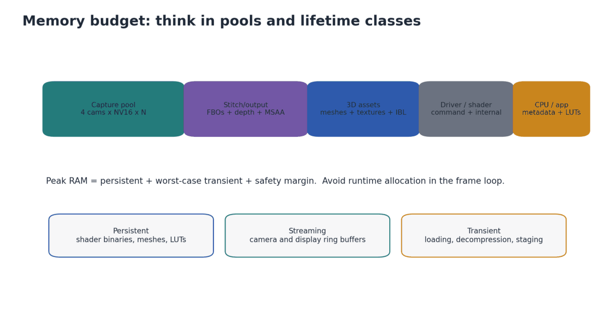
18.1RAM categories
Budget separately:
- camera capture buffers
- ISP/intermediate vendor buffers
- imported GPU image wrappers/internal driver allocations
- stitched render targets
- display swapchain buffers
- depth/stencil/MSAA targets
- 3D geometry and textures
- environment maps
- calibration meshes/LUTs/masks
- shader/program binaries
- CPU heaps/stacks/logging
- temporary asset-decompression buffers
- safety margin
Do not assume EGLImage wrappers consume zero memory; the image storage may be shared but drivers may allocate metadata or internal surfaces.
18.2MSAA example
A 1920x1080 RGBA8 single-sample target is ~7.91 MiB. Conceptually, a 4x MSAA color attachment can represent about four samples per pixel (~31.6 MiB raw) plus depth/stencil, although hardware compression/tile storage can change physical traffic/allocation behavior. Always query/measure actual allocations if the driver provides tools.
If a full-screen camera background does not benefit from multisampling, structure passes so only the necessary 3D content pays the cost.
18.3Flash/storage categories
Typical static storage:
- executable/shared libraries
- shaders and binary caches
- car model (.glb)
- compressed textures/KTX2
- calibration data per vehicle/camera set
- fonts/UI assets
- diagnostic symbols in development builds
- fail-safe/default assets
Use build reports and package manifests. Asset pipelines can silently duplicate textures or include both source PNGs and runtime compressed versions.
18.4Startup peak memory
A common hidden problem is loading a compressed 40 MB asset package, expanding it to 160 MB RGBA data, uploading 160 MB to GPU-visible memory, then only later freeing the staging copy. Peak RAM is much larger than steady state.
Stream assets or transcode directly into final GPU-native formats where possible.
19Multithreading and GLES contexts
GLES contexts are associated with threads through EGL current-context state. Multiple contexts can share resources if created in a share group, but synchronization and driver behavior become more complex.
19.1Simple recommendation
Start with one render thread owning one GLES context. Use other threads for camera orchestration, control logic, asset I/O, and CPU preprocessing. Communicate through lock-free/small queues containing buffer descriptors and fences, not copied pixel payloads.
19.2Background resource upload
A second shared context can upload large static textures while rendering, but it may compete for GPU/driver resources and require GL sync objects. On deterministic systems, it may be better to finish all asset creation before entering the operational state.
19.3Context switching
Avoid repeatedly making different contexts current on one thread. Context switching can be expensive and can complicate debugging.
20Compute shaders: when they help
OpenGL ES 3.1 introduced compute shaders. They are useful for algorithms that do not map naturally to rasterization, but surround-view remap often maps very well to rendering a mesh.
Potential compute uses:
- histogram/exposure analysis
- gain-map calculation
- image statistics
- special filtering
- precomputing dynamic LUTs
- image-space algorithms where every output pixel is independent
Trade-offs:
- explicit workgroup sizing and barriers
- image/SSBO format restrictions
- another synchronization point before graphics consumes results
- potentially worse cache behavior than fixed texture/raster hardware for simple warps
Do not replace a fast texture-mapped triangle solution with compute just because compute feels lower-level.
20.1What a compute dispatch is
A compute shader drops everything that makes the graphics pipeline a pipeline: no vertices, no rasterizer, no fixed output pixel. What remains is a program that the GPU runs many times in parallel, with an index telling each copy which piece of work it is. The work is organised in two levels (Figure 20.1). A dispatch launches a grid of work groups; each work group is a fixed number of invocations (threads) declared in the shader with layout(local_size_x = 16, local_size_y = 16) in;. The two levels exist because they map onto the hardware: a work group runs on one shader core, so its invocations can share fast on-chip memory (shared variables) and wait for each other with barrier(). Different work groups run in any order, possibly at the same time on different cores, and cannot synchronise with each other inside one dispatch.
The histogram is a good first example because it is exactly the kind of algorithm the graphics pipeline handles badly: many pixels write to few, data-dependent locations. The shader below is the one from experiments/hist_gles.c, which runs it on Mesa's software GPU and checks every bin. Each invocation reads one pixel and increments a counter in shared memory; the barriers make sure the counters are cleared before anyone adds and complete before they are merged.
#version 310 es
layout(local_size_x = 16, local_size_y = 16) in;
layout(binding = 0) uniform highp sampler2D luma; // Y plane of the camera frame
layout(std430, binding = 1) buffer Hist { uint bins[256]; };
shared uint local_bins[256];
void main() {
uint i = gl_LocalInvocationIndex; // 0..255: one bin per invocation
local_bins[i] = 0u;
barrier(); // all bins cleared before anyone adds
ivec2 p = ivec2(gl_GlobalInvocationID.xy);
if (all(lessThan(p, textureSize(luma, 0)))) {
uint y = uint(texelFetch(luma, p, 0).r * 255.0 + 0.5);
atomicAdd(local_bins[y], 1u); // cheap: on-chip shared memory
}
barrier(); // all adds done before the merge
if (local_bins[i] != 0u) atomicAdd(bins[i], local_bins[i]); // one global atomic per bin
}On the CPU side the dispatch is three calls: bind the program and resources, glDispatchCompute((W + 15) / 16, (H + 15) / 16, 1), and a memory barrier. The barrier is the part people forget. Compute shaders write through paths that the driver does not track the way it tracks render targets, so before anything reads the results, the application must call glMemoryBarrier with the bit that names how the result will be read next: GL_SHADER_STORAGE_BARRIER_BIT if another shader reads the buffer, GL_TEXTURE_FETCH_BARRIER_BIT if a later pass samples an image the compute shader wrote, GL_BUFFER_UPDATE_BARRIER_BIT before mapping the buffer on the CPU. With the wrong bit the code often works on one GPU and reads stale data on another.
The first version of the experiment declared the luma plane as layout(r8) image2D and failed to compile with "unrecognized layout identifier r8". OpenGL ES 3.1 supports only a short list of image formats for load and store (32-bit single channel, and 4-channel formats such as rgba8, rgba16f, rgba32f); single-channel 8-bit images are not among them. Camera planes are therefore read with texelFetch on a sampler, which also works with external YUV images, and compute outputs are written to r32f, r32ui or rgba8 images or to buffers.
20.2The same work in Vulkan
The shader is almost unchanged in Vulkan. It is written in GLSL 4.50 (or HLSL), compiled offline to SPIR-V with glslangValidator -V (2.8 KB for this shader), resources are addressed as set and binding, and the image size comes in as a push constant. The experiment's Vulkan version reads the frame as a buffer of packed bytes, four pixels per uint, to avoid image setup. Everything around the shader becomes explicit, and the explicit parts are the ones the GLES driver did silently: allocating and binding memory, creating the compute pipeline (which compiles the shader at that moment, not at the first dispatch), writing a descriptor set that says which buffer each binding refers to, and recording the work into a command buffer with explicit barriers:
vkBeginCommandBuffer(cb, &begin);
vkCmdFillBuffer(cb, hist_buf, 0, VK_WHOLE_SIZE, 0); /* clear the bins */
VkMemoryBarrier2 clear_to_cs = { VK_STRUCTURE_TYPE_MEMORY_BARRIER_2,
.srcStageMask = VK_PIPELINE_STAGE_2_CLEAR_BIT, .srcAccessMask = VK_ACCESS_2_TRANSFER_WRITE_BIT,
.dstStageMask = VK_PIPELINE_STAGE_2_COMPUTE_SHADER_BIT, .dstAccessMask = VK_ACCESS_2_SHADER_STORAGE_READ_BIT
| VK_ACCESS_2_SHADER_STORAGE_WRITE_BIT };
vkCmdPipelineBarrier2(cb, &(VkDependencyInfo){ VK_STRUCTURE_TYPE_DEPENDENCY_INFO,
.memoryBarrierCount = 1, .pMemoryBarriers = &clear_to_cs });
vkCmdBindPipeline(cb, VK_PIPELINE_BIND_POINT_COMPUTE, hist_pipeline);
vkCmdBindDescriptorSets(cb, VK_PIPELINE_BIND_POINT_COMPUTE, layout, 0, 1, &set, 0, NULL);
vkCmdPushConstants(cb, layout, VK_SHADER_STAGE_COMPUTE_BIT, 0, sizeof size, size);
vkCmdDispatch(cb, (W / 4 + 15) / 16, (H + 15) / 16, 1); /* 20 x 45 groups */
/* ...a second barrier: COMPUTE_SHADER/SHADER_STORAGE_WRITE -> HOST/HOST_READ (or -> FRAGMENT_SHADER) */
vkEndCommandBuffer(cb);
vkQueueSubmit(queue, 1, &submit, fence); /* then vkWaitForFences */A barrier in Vulkan names both sides: which earlier stage and kind of access must finish (the source) and which later stage and access must wait for it (the destination). That is the same information glMemoryBarrier carries in its bit, made complete. Both versions produce the identical, correct histogram on Mesa (llvmpipe for GLES 3.2, lavapipe for Vulkan 1.4). The Vulkan program is 107 non-comment lines against 74 for GLES including EGL setup, and both use 32 distinct API functions; the gap grows with real applications, mostly in setup code that is written once.
Vulkan exposes queue families, and many GPUs offer a compute-only queue next to the graphics queue. Work submitted there can overlap with rendering ("async compute"), for example computing exposure statistics of frame N while frame N is being stitched. The price is explicit cross-queue synchronisation with semaphores and, unless the resource is shared concurrently, a queue-family ownership transfer for every buffer that moves between the queues.
20.3Compute or fragment shader?
For image-to-image work, both can do the job, and the right choice depends on what the hardware does for free. A fragment shader drawing a full-screen triangle or a remap mesh gets the texture units with filtering and YUV conversion, the framebuffer compression of the output, and on tile-based GPUs the on-chip tile memory: the result of the pass is written once, compressed, at the end of each tile. A compute shader writing an image gets none of that by default. Its stores go to memory as they happen, it cannot use the tile memory of a render pass, and on a tile-based GPU placing a compute dispatch between two render passes forces the first pass to be fully resolved to DRAM before the dispatch can start.
So the surround-view warp, blending and colour correction stay in the fragment stage, as section 20 says. Compute pays off when its two strengths are used: shared memory, when neighbouring outputs need the same inputs (a separable blur or a box filter that loads a tile with its border once and reuses it), and free-form writes, when outputs are not one-per-pixel (histograms, reductions to a mean or maximum, compaction of a list of detected features, building a lookup table). Statistics for photometric correction between cameras are the typical surround-view example: a compute pass computes per-camera means in the overlap regions, and a tiny uniform buffer carries the gains to the next frame's fragment shader.
"We use compute shaders where the work is not one-output-per-pixel: histograms, reductions, statistics for the photometric correction. The warp itself stays a textured mesh in a fragment shader, because there the GPU's texture units, framebuffer compression and tile memory work for us. And every compute pass ends with an explicit barrier that names how its output is read next."
21Platform notes
Background: the concepts behind this chapter are explained in Camera, ISP, GPU and display: platform specifics side by side. This chapter is the hands-on side.
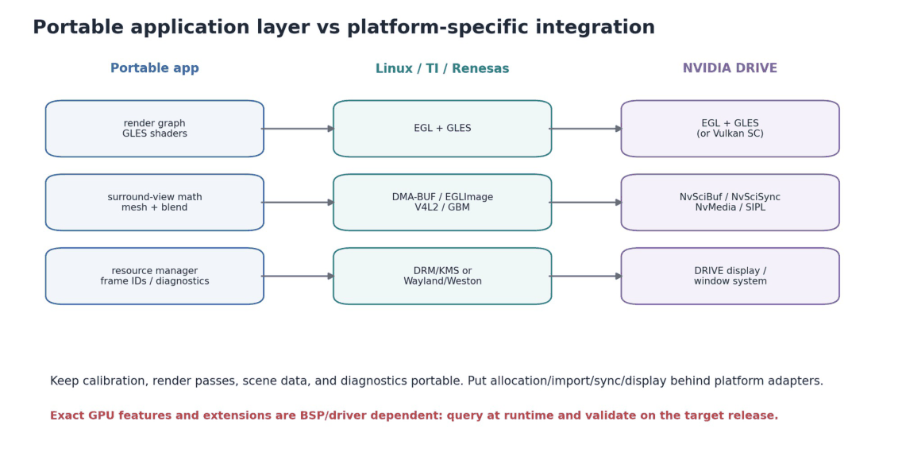
21.1NVIDIA DRIVE
NVIDIA DRIVE OS provides OpenGL ES/EGL as well as Vulkan/Vulkan SC. Current DRIVE OS guidance (7.x documentation) recommends Vulkan SC for automotive production graphics and notes OpenGL ES support for development/prototyping [R24]. This is a safety/product-process statement as much as an API statement; follow the exact target program requirements.
NVIDIA’s NvSci family is important in camera/compute/graphics pipelines:
- NvSciBuf - describes/allocates/exchanges buffer objects
- NvSciSync - cross-engine synchronization
- NvSciStream - packet streaming using buffer/sync objects
- camera paths may involve NvSIPL/NvMedia depending on release and architecture
NVIDIA describes NvSciBuf/NvSciSync as mechanisms for exchanging resources between otherwise independent libraries and for preallocating resources in safety-oriented systems [R12].
For debugging/performance, current DRIVE documentation includes Nsight Systems and Nsight Graphics. Nsight Systems can trace OpenGL/OpenGL ES GPU workloads and system scheduling; Nsight Graphics provides frame debugging and GPU pipeline analysis on supported configurations [R22][R23].
Design advice for portability: wrap NvSci-specific buffer/fence objects behind the same NativeImage / NativeFence abstraction used by a Linux DMA-BUF backend.
21.2TI TDA4VM / J721E
TI documents the TDA4VM/J721E 3D accelerator as Imagination PowerVR Rogue 8XE and lists OpenGL ES support up to 3.2 on relevant Processor SDK Linux releases [R10]. TI also lists EGL_EXT_image_dma_buf_import and modifier support in its graphics documentation, which is directly relevant to camera-to-GPU sharing [R10].
The TDA4 software architecture often splits work across Linux A72 and RTOS/accelerator cores. TI’s SDK references surround-view demos and Vision Apps/OpenVX components [R11]. Camera capture may originate in a remote/RTOS pipeline while rendering occurs on Linux, so the buffer descriptor and synchronization contract across cores/processes is critical.
The PowerVR GPU is tile-based. Apply PowerVR-specific bandwidth practices: clear render targets, invalidate dead attachments, avoid unnecessary glFinish/readback, and keep full-screen intermediate passes under control [R14] [R15][R18].
TI’s graphics documentation mentions PowerVR profiling tools such as PVRTune/PVRCarbon [R10]. Keep host/target tool versions compatible with the shipped GPU driver.
21.3Renesas R-Car
Renesas R-Car is a broad family. R-Car H3/H3e documentation lists an Imagination PowerVR GX6650 class GPU and OpenGL ES 3.1 software support [R26]. Newer R-Car V4H targets ADAS/parking/surround-view and integrates a GPU plus dedicated ISP/image-rendering blocks [R27]. Exact GLES/Vulkan driver capabilities and production software packages differ by generation/release.
Some Renesas SoCs include image-renderer/distortion-correction hardware. A key architecture decision is whether fisheye correction/remap should run on a dedicated image block or GPU. Dedicated hardware can save GPU bandwidth/time, but may impose format/topology limits. Compare:
- number of supported cameras
- input/output format and stride/modifier support
- calibration model flexibility
- latency and buffering
- overlap blending capability
- sharing path into GPU/display
- safety qualification
Do not assume the dedicated image renderer removes the need for a GPU: 3D vehicle, dynamic overlays, PBR, and final composition may still be GPU work.
21.4Generic embedded Linux
A common open Linux stack is:
V4L2 capture -> DMA-BUF -> EGLImage/GLES -> GBM/Wayland or DRM/KMS -> displayThe Linux kernel documentation defines DMA-BUF sharing/synchronization [R3], DMA-BUF heaps [R4], DRM framebuffer plane metadata [R9], and the KMS display pipeline [R21]. User-space drivers and EGL implementations determine which FourCC/modifier combinations actually work.
22Designing a portable graphics/platform abstraction
Do not wrap every GL function. GLES itself is already portable. Abstract the pieces that actually vary.
A useful interface boundary:
struct NativePlane {
int fd;
uint32_t offset;
uint32_t pitch;
uint64_t modifier;
};
struct NativeImageDesc {
uint32_t width, height;
uint32_t drmFourcc;
ColorSpace colorSpace;
SampleRange range;
NativePlane planes[4];
uint32_t planeCount;
};
class NativeImage {
public:
virtual GpuTextureView textureView() = 0;
virtual NativeFence acquireFence() = 0;
virtual NativeFence releaseAfterGpuRead() = 0;
};Backend examples:
- Linux DMA-BUF + EGLImage
- NVIDIA NvSciBuf/NvSciSync integration
- TI platform buffer wrapper
- QNX/native vendor buffer API.
- The render graph should only see GpuTextureView plus metadata.
23Reference surround-view render architecture
A robust architecture can be divided into six modules.
23.1Capture adapter
Responsibilities:
- receive synchronized camera frame sets
- validate format/size/stride/modifier
- associate frame ID/timestamps
- expose producer completion fence
- hold/release buffer ownership
23.2GPU image cache
Maps native buffer identity to long-lived EGLImage/GL texture wrappers. If capture uses N fixed slots per camera, cache exactly those N wrappers. Do not key only by FD number if FDs can be closed/reused; use an allocation identity/lifetime known to the API.
23.3Surround-view renderer
Owns:
- per-camera remap mesh
- seam masks/weights
- camera color-correction data
- stitch shader
- optional stitched output FBO
23.43D renderer
Owns:
- glTF/mesh resources
- PBR shaders
- IBL textures
- depth/MSAA targets
- vehicle pose/animation
23.5Presenter
Owns:
- EGL window/swap path or DRM/KMS path
- frame pacing
- output fences/page-flip events
- display diagnostics
23.6Telemetry
Every frame records:
frameSetId
camera timestamps
capture slot IDs
GPU submit timestamp
GPU timer results per pass
present timestamp
buffer wait durations
late/drop reasonKeep telemetry lightweight and ring-buffered. It is invaluable for field issues.
24Example render passes in detail
Assume four imported external camera textures and a 3D vehicle.
24.1Pass A: surround-view stitch
State:
FBO: stitchedColor (RGBA8/RGB10A2 depending quality)
depth: disabled
blend: shader-controlled or fixed blending
viewport: output resolutionDraw four remap meshes. In overlap regions either draw meshes with alpha weights into one target using blending, or have a shader sample both cameras for deterministic two-source blending.
Two-source shader concept:
vec3 a = sampleCamera(camA, uvA);
vec3 b = sampleCamera(camB, uvB);
a = colorCorrectA(a);
b = colorCorrectB(b);
float w = texture(seamMask, seamUv).r;
vec3 stitched = mix(b, a, w);24.2Pass B: 3D composition
Option 1: use stitchedColor as texture on a 3D ground/bowl mesh, then render vehicle.
Option 2: skip Pass A and render each camera directly onto its part of the 3D bowl, then render vehicle. This can save one full-screen texture write/read.
24.3Pass C: overlays/UI
Render parking guidelines, trajectory, warnings, and text. Lines can be anti-aliased via geometry/MSAA or signed-distance-field techniques for UI elements.
24.4Pass D: final color/output
If required, apply display transfer/gamma, color correction, or final scaler. Prefer display hardware for simple scaling if it does not add unwanted latency and is part of the validated pipeline.
25Common failure patterns and the likely cause
Use the symptom as a clue, then check the most likely layer first:
Image split or diagonal: usually a wrong pitch/stride. Compare producer stride with the width you assumed.
UV colors swapped: often NV16 versus NV61, or U/V ordering. Confirm FourCC and use a known color-bar/test pattern.
Correct geometry but wrong colors: suspect full/limited range or BT.601/BT.709 matrix selection.
Occasional tearing inside a camera frame: suspect a missing producer-consumer fence. Check capture completion and GPU release synchronization.
Whole-frame tearing on the display: inspect swap interval, KMS fences, vblank, and page-flip synchronization.
Stable 30 FPS on a 60 Hz display: investigate missed deadlines, GPU-time tail latency, and present intervals.
Good FPS but delayed response: queue depth is probably too large. Measure capture-to-display latency, not only FPS.
GPU-time spikes every few seconds: look for allocation, shader compilation, DVFS/thermal effects, or periodic CPU work. Trace API calls and clocks.
DMA-BUF import works for RGB but not YUV: the format/modifier combination may be unsupported. Query EGL dma-buf capabilities and platform documentation.
Import works only after glFinish(): this strongly suggests a synchronization or lifetime bug. Replace the global stall with correct fences.
Seams shift with temperature or vibration: check mechanical/calibration drift and camera extrinsics.
Seam brightness pulses: check per-camera AE/AWB synchronization and photometric correction.
3D car flickers through the ground: inspect near/far planes, depth clear value, depth-test function, and depth writes.
Black output after a context reset: resources may have been lost. Exercise the robustness/reset-recovery path.
26Precision, numeric choices, and shaders
Embedded shader precision qualifiers matter. In fragment shaders, mediump may be 16-bit-ish depending on implementation and can be insufficient for large coordinate transforms or high-dynamic-range lighting. Use highp for positions, UV math where distortion precision matters, and PBR calculations if artifacts appear. Use lower precision deliberately for masks/simple colors where tested.
For remap mesh UVs, 16-bit normalized/half precision may be enough, but evaluate worst-case edge error in source pixels. A 1/1024 UV error on a 1920-wide image is ~1.9 pixels, which can be visible at seams. Half floats have non-uniform precision; test actual calibration ranges.
27Coordinate, orientation, and convention traps
Graphics bugs often come from conventions rather than arithmetic.
Document these choices:
- image origin top-left or bottom-left
- UV (0,0) meaning
- camera coordinate axes
- vehicle coordinate axes (x forward? y left? z up?)
- matrix storage row-major/column-major
- vector multiplication side
- handedness
- clip-space depth convention
- rotation quaternion convention
- fisheye model units (radians/degrees)
GLES texture coordinates conceptually work independently of file/image origin; imported camera buffers often appear vertically inverted relative to assets. Fix orientation in UV generation or a transform matrix, not with an expensive image copy.
28Color management and display
A visually correct pipeline should know which values are linear light and which are gamma-encoded. Camera YUV conversion normally produces an RGB representation in a transfer-encoded domain depending on camera pipeline. PBR calculations should be done in linear space. UI artwork may be authored in sRGB.
A pragmatic architecture:
- define the camera RGB working space after YUV conversion
- convert to a linear working space only for operations that require physically meaningful light calculations
- keep simple 2D camera blending consistent (do not accidentally blend one linear and one gamma-coded camera)
- render PBR in linear
- apply final transfer function/display color conversion once
Perfect color science can be complex, especially with HDR displays. The critical rule is consistency and explicit metadata.
29Robustness, recovery, and automotive considerations
Rendering in an automotive product has requirements beyond game graphics.
29.1Bounded resource usage
Prefer startup allocation and fixed-size pools. Avoid unbounded queues. If the GPU falls behind, define a drop policy rather than accumulating old camera frames and increasing latency indefinitely.
A surround-view display normally wants the newest coherent frame set, not every old frame.
29.2Watchdog and liveness
Track progress counters:
- latest captured frame ID
- latest GPU-completed frame ID
- latest presented frame ID
A watchdog can detect a stuck stage. Recovery may include resetting only the affected module/context or switching to a degraded/fail-safe view according to system safety design.
29.3Context loss/reset
If robustness APIs are available, detect a graphics reset and recreate resources. Store enough CPU-side immutable asset/calibration data to rebuild the GLES state, or keep a validated restart path for the graphics process.
29.4Safety qualification
OpenGL ES itself and general Linux graphics stacks may not satisfy a project’s safety requirements. NVIDIA’s current DRIVE guidance explicitly recommends Vulkan SC for safety/production graphics use cases rather than OpenGL in a safety environment [R24]. Other vendors have their own safety packages and qualified components. Treat API choice as a system-safety decision, not only a technical preference.
30Testing strategy
A surround view is tested at three levels: logic that needs no GPU, rendered images compared against references, and long soak runs that expose leaks, drift and rare synchronisation bugs.
30.1Unit tests without a GPU
Test:
- buffer offset/size formulas
- camera calibration projection
- UV validity
- seam-weight sums (wA + wB ~= 1)
- YUV->RGB reference conversion
- glTF parser/asset validation
- memory-budget calculations
30.2GPU image tests
Render deterministic inputs to an offscreen target and compare to golden images with tolerance. Useful patterns:
- color bars
- checkerboard UV texture
- numbered camera quadrants
- calibration grid
- single white triangle against black
- depth-gradient test
- seam ramp
Do not require bit-identical images across different GPU vendors for complex filtering/PBR unless the specification guarantees it. Use perceptual or bounded numeric tolerance.
30.3Soak tests
Run for hours under:
- nominal temperature
- high GPU/CPU load
- camera reconnect/error injection
- display mode changes if applicable
- memory pressure
- logging enabled/disabled
- clock/DVFS transitions
Track dropped frames, maximum latency, GPU resets, and memory growth.
31Practical code patterns
Three small patterns keep a GLES code base predictable: a capability object filled once at start-up, RAII wrappers that tie GL and EGL object lifetimes to C++ scopes, and a frame descriptor that travels with every buffer.
31.1Capability object
struct GraphicsCaps {
int glMajor = 0, glMinor = 0;
bool dmaBufImport = false;
bool dmaBufModifiers = false;
bool externalImageEssl3 = false;
bool nativeFenceSync = false;
bool timerQuery = false;
bool khrDebug = false;
GLint maxTextureSize = 0;
GLint maxSamples = 0;
GLint maxTextureUnits = 0;
};Build this once and log it. Feature selection should use this object, not preprocessor guesses based on vendor name.
31.2RAII for GL/EGL objects
In C++, wrap object lifetimes so every EGLImage, texture, buffer, FBO, sync object, and FD has one clear owner. Many intermittent GPU faults are use-after-free or double-close bugs disguised as rendering problems.
31.3Frame descriptor
struct CameraFrame {
uint64_t frameId;
uint64_t sensorTimestampNs;
NativeImageDesc image;
NativeFence readyFence;
Rect crop;
CameraExposure exposure;
};
struct SurroundFrameSet {
uint64_t setId;
CameraFrame cam[4];
};Keep image metadata immutable for the lifetime of the frame.
32Extension and version strategy
Do not write code such as:
if (vendor == "TI") use_extension_X();Instead:
- query core version
- query extension string/function pointer
- query format/modifier support where possible
- execute a small startup self-test/import
- select the backend path
Maintain a validated platform manifest in your build/release documentation:
SoC / board
OS/BSP release
kernel version
GPU driver build
EGL version/vendor
GLES version/renderer
required extensions
camera format + modifier
render target format + modifier
display path
profiler versionThis makes bug reports reproducible.
33What to learn after OpenGL ES
Once you understand this pipeline, learning Vulkan/Vulkan SC becomes much easier. The concepts remain: images, buffers, formats, layouts, render passes, synchronization, queues, and presentation. Vulkan makes memory and synchronization much more explicit and reduces hidden driver work, at the cost of more code.
For automotive production, this may be necessary depending on platform/safety requirements. But GLES remains an excellent way to learn rasterization, shaders, camera textures, render targets, and performance fundamentals.
Chapter 35 is that next step: Vulkan for the OpenGL ES programmer, with one frame compared call by call, explicit synchronisation, zero-copy camera import and Vulkan SC.
34A ten-step hands-on project
A ten-step hands-on project that builds the whole surround view from a first triangle to a robust four-camera renderer, one deliverable per step.
34.1Step 1: GLES fundamentals
Create EGL context and render triangle. Learn clip space, vertex buffers, VAOs, shaders, uniform matrices, and viewport.
Deliverable: rotating textured cube plus FPS counter.
34.2Step 2: textures and FBOs
Load RGB textures, render to an offscreen texture, post-process to screen. Add depth and blending.
Deliverable: two-pass renderer with framebuffer resize handling.
34.3Step 3: Linux camera buffer fundamentals
Read V4L2/DMA-BUF metadata. Display one captured frame first with a CPU upload, then zero-copy import.
Deliverable: one camera, no copies in steady state.
34.4Step 4: YUV and synchronization
Validate NV12/NV16 conversion, range/color matrix, and producer-consumer fences.
Deliverable: color-bar test and frame-ID/fence telemetry.
34.5Step 5: four-camera ingestion
Import four cameras, including the single-allocation/quad-buffer layout if your platform uses it.
Deliverable: four synchronized camera quadrants at target FPS.
34.6Step 6: remap
Implement calibrated mesh generation and GPU sampling.
Deliverable: four individually undistorted/projected views.
34.7Step 7: stitching
Add overlap masks, photometric compensation, and seam visualization debug modes.
Deliverable: stable bird-eye composite.
34.8Step 8: 3D and PBR
Load GLB/glTF, render central car with simple IBL, add MSAA.
Deliverable: 3D bowl + PBR vehicle.
34.9Step 9: performance
Add GPU timer queries, CPU profiling, memory budget, bandwidth estimates, and present timing. Remove all accidental glFinish and frame-loop allocations.
Deliverable: frame-time breakdown and P99 targets.
34.10Step 10: robustness
Add failure injection, context/resource recreation, dropped-frame policy, long-run telemetry, and platform profiler captures.
Deliverable: engineering report with bottlenecks and recovery behavior.
35Vulkan for the OpenGL ES programmer
Vulkan does not draw anything that OpenGL ES cannot draw. It moves decisions that the GLES driver makes behind the application's back (when to compile, where to allocate, when to wait, how to order work) into the application's code. That costs code and care, and buys predictable timing, cheap multi-threaded submission and explicit control over memory and synchronisation, which is why new automotive HMI engines and safety-relevant renderers move to it.
35.1Why Vulkan exists
OpenGL ES is a state machine with an implicit stream of commands. The application sets state (bind this texture, use this program, enable blending) and calls glDraw*; the driver must then work out what the combination means for the hardware. At draw time it validates the state, may discover that this blend mode plus this framebuffer format needs a different shader variant and compile it on the spot, tracks which buffers the GPU is still reading so that a glBufferSubData does not overwrite them, and inserts waits and cache flushes where it guesses they are needed. All of that is invisible and mostly correct, and it has three costs for embedded real-time rendering: CPU time per draw call, a single thread per context, and timing surprises, the frame that suddenly takes 30 ms because the driver compiled a shader variant or reallocated a buffer.
Vulkan, released by Khronos in 2016 and now at version 1.4, makes these decisions explicit. All state that affects shader compilation is baked into a pipeline object created ahead of time; memory is allocated and bound by the application; work is recorded into command buffers, on any number of threads, and submitted to queues; and every dependency between pieces of work is declared with fences, semaphores and barriers. The driver becomes thin and predictable. The application becomes responsible for correctness, and errors that GLES would have absorbed become corrupted frames or hangs, which is why development always runs with the validation layers enabled.
In a camera-display system the GPU is a shared, asynchronous engine with hard deadlines. An API in which nothing happens implicitly is easier to reason about for timing, for safety arguments (the basis of Vulkan SC, section 35.7) and for sharing buffers and fences with the camera, the display and other engines.
35.2The object model in one picture
Vulkan has more object types than GLES, but each corresponds to something the GLES driver had internally. Figure 35.1 groups them by role. The instance loads the driver; physical devices are the GPUs with their limits and memory types; the logical device is an open connection to one of them, from which queues are taken. Buffers and images are only descriptions until device memory is allocated and bound to them; image views and samplers say how shaders see them. Shaders arrive as SPIR-V in shader modules; a pipeline combines them with all fixed-function state; descriptor sets, laid out by a pipeline layout, bind resources to the shader's set/binding slots. Work is recorded in command buffers and ordered with fences (GPU to CPU), semaphores (queue to queue, and to the presentation engine) and pipeline barriers (inside a queue). The swapchain replaces the EGL window surface.
Two of these change how code is structured more than the rest. Pipelines are immutable and expensive to create, so an application creates all the pipelines it will need at start-up (one per combination of shaders, vertex layout, blend, depth and render-target formats), not at the first draw. And memory is allocated in large blocks and sub-allocated by the application or a library such as the Vulkan Memory Allocator, because the number of separate allocations is limited (the maxMemoryAllocationCount limit is commonly 4096) and each one is slow.
35.3One frame, call by call
The clearest way to see the difference is to put one frame of the surround-view renderer side by side (Figure 35.2). In GLES the frame is a sequence of state changes and draws ending in eglSwapBuffers; waiting for a free buffer, choosing the back buffer, flushing and ordering are implicit. In Vulkan each of those steps is a call the application makes.
/* Per frame-in-flight slot: command buffer, fence (created signalled), "acquired" semaphore, uniform buffer.
Per swapchain image: "rendered" semaphore. FRAMES_IN_FLIGHT = 2. */
void draw_frame(void) {
Slot *s = &slot[frame % FRAMES_IN_FLIGHT];
vkWaitForFences(dev, 1, &s->fence, VK_TRUE, UINT64_MAX); /* GPU is done with this slot's resources */
uint32_t img;
vkAcquireNextImageKHR(dev, swapchain, UINT64_MAX, s->acquired, VK_NULL_HANDLE, &img);
vkResetFences(dev, 1, &s->fence); /* only after a successful acquire */
memcpy(s->ubo_mapped, &per_frame, sizeof per_frame); /* this slot's copy, no driver renaming */
vkResetCommandBuffer(s->cmd, 0);
vkBeginCommandBuffer(s->cmd, &begin_info);
to_layout(s->cmd, sc_image[img], VK_IMAGE_LAYOUT_UNDEFINED, VK_IMAGE_LAYOUT_COLOR_ATTACHMENT_OPTIMAL);
vkCmdBeginRendering(s->cmd, &rendering_info[img]); /* dynamic rendering, core in 1.3 */
vkCmdBindPipeline(s->cmd, VK_PIPELINE_BIND_POINT_GRAPHICS, bowl_pipeline);
vkCmdBindDescriptorSets(s->cmd, VK_PIPELINE_BIND_POINT_GRAPHICS, layout, 0, 1, &s->set, 0, NULL);
vkCmdBindVertexBuffers(s->cmd, 0, 1, &bowl_vbo, &zero);
vkCmdBindIndexBuffer(s->cmd, bowl_ibo, 0, VK_INDEX_TYPE_UINT32);
vkCmdDrawIndexed(s->cmd, bowl_index_count, 1, 0, 0, 0);
vkCmdEndRendering(s->cmd);
to_layout(s->cmd, sc_image[img], VK_IMAGE_LAYOUT_COLOR_ATTACHMENT_OPTIMAL, VK_IMAGE_LAYOUT_PRESENT_SRC_KHR);
vkEndCommandBuffer(s->cmd);
VkPipelineStageFlags wait_at = VK_PIPELINE_STAGE_COLOR_ATTACHMENT_OUTPUT_BIT;
VkSubmitInfo si = { VK_STRUCTURE_TYPE_SUBMIT_INFO,
.waitSemaphoreCount = 1, .pWaitSemaphores = &s->acquired, .pWaitDstStageMask = &wait_at,
.commandBufferCount = 1, .pCommandBuffers = &s->cmd,
.signalSemaphoreCount = 1, .pSignalSemaphores = &rendered[img] };
vkQueueSubmit(queue, 1, &si, s->fence);
VkPresentInfoKHR pi = { VK_STRUCTURE_TYPE_PRESENT_INFO_KHR,
.waitSemaphoreCount = 1, .pWaitSemaphores = &rendered[img],
.swapchainCount = 1, .pSwapchains = &swapchain, .pImageIndices = &img };
vkQueuePresentKHR(queue, &pi);
frame++;
}Three details in this loop carry most of the learning. The acquire semaphore exists because the presentation engine may still be scanning out the image it hands back; the colour-output stage waits on it, but the vertex work of the frame can start before. The fence is reset only after a successful acquire, so that an out-of-date swapchain (window resized, display reconfigured) does not leave a fence that will never be signalled. And the per-frame uniform buffer has one copy per slot: in GLES, glBufferSubData on a buffer the GPU is still reading makes the driver silently copy or stall; in Vulkan, writing the slot that the fence just released is safe by construction and anything else is a bug.
Few teams write this loop by hand more than once. HMI engines and frameworks have their own Vulkan back ends, and libraries such as the Vulkan Memory Allocator and helpers for swapchains and pipelines remove most boilerplate. What remains essential is understanding the model, because bugs show up as synchronisation errors that only someone who knows what the frame is waiting on can find.
35.4Synchronisation made explicit
The CPU should run ahead of the GPU by a bounded amount: enough to keep the GPU busy, not so much that latency grows (Camera, ISP, GPU and display 9.4). Vulkan applications express this with frames in flight (Figure 35.3). With two slots, the CPU records frame N+1 while the GPU renders frame N; before reusing slot 0 for frame N+2 it waits on slot 0's fence. Everything that changes per frame (command buffer, uniform data, descriptor sets referencing them) exists once per slot.
Three mechanisms cover the different directions of waiting. A fence is signalled by the GPU and waited on by the CPU. A semaphore is signalled by one queue operation and waited on by another, on the GPU side, without the CPU in between: acquire to render, render to present, or a compute queue to a graphics queue. Timeline semaphores (core since Vulkan 1.2) carry a 64-bit counter instead of a binary state, so one object can express "frame 1234 is done" for any number of waiters, CPU or GPU. Inside one queue, pipeline barriers order commands and make memory writes visible; for images they also perform layout transitions, telling the driver that an image is about to change role (render target, sampled texture, transfer destination, presentation), which on many GPUs means decompressing or reorganising it.
The typical Vulkan synchronisation bug produces correct images on the developer's GPU and flickering on the target, because a missing barrier is only harmful when the hardware actually overlaps the two operations. Run the validation layers with synchronisation validation enabled during development and in CI; it reports read-after-write and write-after-write hazards that no amount of visual testing would catch reliably.
35.5Pipelines, shaders and start-up time
In GLES the shader source is compiled by the driver at run time, and the driver may compile again when state that it folds into the shader changes. In Vulkan the application ships SPIR-V, an intermediate representation compiled offline, and creates pipeline objects that contain everything the driver needs to generate final GPU code. Pipeline creation is where the expensive compilation happens, and the application decides when: at start-up, on a loading thread, never in the frame loop.
For a car, start-up time is a requirement, not a convenience (Camera, ISP, GPU and display 12.1). The standard tool is the pipeline cache: after the pipelines are created once, the driver's compiled binaries are serialised with vkGetPipelineCacheData and stored; on the next boot the application passes them back and pipeline creation becomes a lookup. The cache is only valid for the same GPU and driver version (its header contains the vendor, device and a cache UUID), so production systems generate it per software release on the target hardware, or at first boot, and must treat a mismatch as normal rather than as an error. Since 2022 two extensions reduce the cost of many state combinations: VK_EXT_graphics_pipeline_library builds pipelines from separately compiled parts, and VK_EXT_shader_object drops the pipeline object for applications that prefer GLES-style binding of individual shaders with dynamic state.
The histogram compute shader is 2,776 bytes of SPIR-V. On the test machine the Vulkan driver reported version 1.4 and a limit of 1024 invocations per work group, the same limit the GLES driver reported (experiments/hist_vk_output.txt, hist_gles_output.txt, Mesa on a CPU; absolute timings from it would mean nothing).
35.6Camera frames into Vulkan without copies
The zero-copy path of chapter 8, dma-buf to EGLImage to external texture, has a Vulkan equivalent built from extensions. The dma-buf file descriptor is imported as device memory with VK_KHR_external_memory_fd and VK_EXT_external_memory_dma_buf. The image is created with VK_EXT_image_drm_format_modifier, which lets the application state the exact DRM format modifier (linear, tiled, compressed) and the per-plane offsets and strides, the same information the EGL_DMA_BUF_PLANE* attributes carry. For NV12 or NV16, a sampler YCbCr conversion object (core since Vulkan 1.1) describes the colour model (BT.601 or BT.709), the range (narrow or full) and the chroma siting, and must be attached to the sampler as an immutable sampler in the descriptor set layout; the texture unit then returns RGB, like samplerExternalOES in GLES (section 7.4).
Synchronisation and ownership complete the picture. The camera driver signals completion with a dma-fence; exported as a sync_file, it can be imported into a Vulkan semaphore with VK_KHR_external_semaphore_fd, so the GPU waits for the capture without the CPU blocking. And because the buffer belongs to an engine outside Vulkan, the application transfers ownership with a queue-family barrier from VK_QUEUE_FAMILY_FOREIGN_EXT before sampling and back after, which is the point where the driver may need to handle compression or caches. The result is the same as with EGLImage, with every assumption written down: more code, but no guessing by the driver about formats, colour space or when the buffer is safe to read.
The immutable-sampler rule exists because the YCbCr conversion may be compiled into the shader on some hardware: the driver must know the conversion when it builds the pipeline, not when a descriptor is updated. It is a small example of the Vulkan principle that everything affecting code generation is fixed at pipeline creation.
35.7Vulkan SC and choosing an API
Vulkan SC 1.0, released by Khronos in March 2022, is a profile of Vulkan 1.2 for safety-critical systems and the successor of OpenGL SC 2.0. It takes Vulkan's explicitness further, in the direction a safety argument needs. All pipelines are compiled offline: the application ships a pipeline cache produced by an offline compiler and creates pipelines from it, so no shader compiler runs on the target. Memory for objects is reserved up front: at device creation the application declares the maximum number of each object type and the pool sizes it will use, so there is no unbounded allocation at run time. Features with little value for safety-critical use are removed, and a fault-reporting mechanism is added. The result is a renderer whose resource use and code paths can be analysed statically, which is what an ISO 26262 argument for, say, a cluster renderer needs.
| Situation | Practical choice |
|---|---|
| Existing surround view or camera views on GLES, vendor samples in GLES | Stay on GLES; it is simpler, well supported, and the camera import is short. Move when a concrete limit (CPU cost, timing jitter, safety) appears. |
| New HMI or 3D engine, several threads producing work, Android Automotive | Vulkan, usually through the engine's back end; on Android it is the platform's primary low-level graphics API. |
| Safety-relevant rendering (cluster telltales drawn by the GPU, ASIL camera views) | Vulkan SC where the platform offers a qualified driver; otherwise a non-GPU safety renderer (Camera, ISP, GPU and display 14.4). |
| Mixed: legacy GLES code on a Vulkan-first platform | Layered GLES implementations such as ANGLE (GLES on Vulkan) or Mesa's Zink (OpenGL on Vulkan) keep old code running. |
"Vulkan doesn't draw anything GLES can't; it moves the driver's hidden decisions into our code. Pipelines are compiled ahead of time and cached, memory is allocated by us, and every dependency is a fence, semaphore or barrier we write. That gives predictable frame times, multi-threaded recording and explicit zero-copy import of camera buffers, at the cost of more code and a strict discipline backed by the validation layers. Vulkan SC adds offline-only pipelines and fixed memory reservations, which is what a safety argument needs."
Not in this chapter: Vulkan compute compared with CUDA and OpenCL belongs to GPU computing and CUDA 11.4; engine-level render graphs to Game engines.
ACheat sheet: quick formulas
The formulas used most often when sizing buffers, frame budgets and pixel workloads.
A.1NV16 frame size
For the common two-plane layout:
bytes = strideY*H + strideUV*HIf pitches are equal:
bytes = 2 * stride * HA.2NV12 frame size
For 4:2:0 semi-planar:
bytes = strideY*H + strideUV*(H/2)with alignment/odd-size rules defined by the producer.
A.3RGBA target
bytes = width * height * 4(use actual pitch/allocation size for a precise budget).
A.4Frame budget
60 FPS -> 16.667 ms/frame
50 FPS -> 20.000 ms/frame
30 FPS -> 33.333 ms/frameA 60 Hz product should normally target significantly less than 16.67 ms GPU workload to keep margin for spikes and other clients.
A.5Rough pixel-rate workload
pixels_per_second = width * height * FPS1920x1080@60 ~= 124.4 million output pixels/s before overdraw and extra full-screen passes.
A.6Compute shaders and Vulkan at a glance
| Item | Value and meaning |
|---|---|
| Work groups for 1280×720 at 16×16 | 80 × 45 = 3,600 groups of 256 invocations: ((W+15)/16, (H+15)/16, 1) |
| Max invocations per group | ES 3.1 guarantees at least 128; 1024 is common (Mesa reported 1024 in both APIs) |
| ES 3.1 image formats | no r8: read 8-bit camera planes with texelFetch, write r32f, r32ui, rgba8 or buffers |
| glMemoryBarrier bit | names how the result is read next (texture fetch, shader storage, buffer update ...) |
| Vulkan versions | 1.0 (2016), 1.1 YCbCr conversion core, 1.2 timeline semaphores, 1.3 dynamic rendering and synchronization2, 1.4 current; Vulkan SC 1.0 (2022) based on 1.2 |
| Frames in flight | usually 2: one fence, command buffer and uniform copy per slot; one "rendered" semaphore per swapchain image |
| Camera import | VK_EXT_external_memory_dma_buf + VK_EXT_image_drm_format_modifier + YCbCr conversion as immutable sampler + sync_file semaphore + foreign queue-family transfer |
| Start-up | ship pipeline caches per GPU and driver version; Vulkan SC requires offline-compiled pipelines |
BDebug visualization modes worth building into the product
A professional renderer benefits from runtime debug modes that can be enabled in development builds:
- camera 0/1/2/3 raw view
- Y-only and UV visualization
- seam weight heatmap
- camera ID color per output pixel
- remap UV checkerboard
- invalid-pixel mask
- calibration grid
- per-camera exposure/gain text
- depth buffer visualization
- wireframe remap mesh
- GPU pass timing overlay
- frame IDs and capture/present latency
- render-target thumbnails
- one-camera-at-a-time isolation
These save far more time than they cost to implement.
CStartup checklist
Before entering the steady render loop:
- confirm EGL/GLES version and required extensions
- install debug callback
- validate every shader/program
- query hardware limits
- validate camera format, dimensions, pitches, modifiers
- validate color space/range
- allocate all camera/output rings
- create/import all EGLImages and GL texture wrappers
- create VAOs/VBOs/EBOs
- create FBOs and check completeness
- load/validate glTF assets
- warm up shaders/render passes if allowed
- initialize GPU timer query ring
- initialize frame telemetry
- perform one known-pattern render test
- verify first present/page flip
DSteady-state “do not” list
Avoid these in the normal frame path unless profiling proves them harmless/necessary:
- allocating/freeing camera or render buffers
- compiling/linking shaders
- creating/destroying EGLImages
- loading files
- glFinish()
- synchronous pixel readback
- querying lots of GL state
- per-frame mesh regeneration for static calibration
- copying camera pixels through CPU RAM
- blocking on an old frame when a newer coherent frame is available
- growing queues without a limit
EQuestions to ask a camera/BSP vendor
When integration documentation is incomplete, request precise answers to these questions:
- What is the exact FourCC of each camera output?
- Is it V4L2 single-planar or multi-planar API semantics?
- How many DMA-BUF FDs per frame? Can planes share one FD?
- What are per-plane offsets and strides?
- Is the memory linear, tiled, or compressed? What DRM modifier represents it?
- What alignment constraints apply to offsets/strides/heights?
- What color primaries/matrix/transfer/range does the ISP output use?
- What is the chroma siting?
- What fence indicates camera/ISP write completion?
- How does GPU completion get communicated before buffer reuse?
- Are all four cameras synchronized? What timestamp does each frame carry?
- Can one physical allocation contain several cameras? What is its exact layout?
- Can the GPU import the format directly as EGLImage/external texture?
- Does the display support direct scanout of the GPU output modifier?
- Which API path is qualified/supported for production and safety requirements?
QSelf-check questions
Short model answers first, then questions that check understanding with why and what if.
Q.1Concepts
What is the difference between an EGL context, an EGL surface and a framebuffer?Basics
The context holds GLES state and owns GPU objects. The surface is a destination EGL provides, usually a native window or a pbuffer. The framebuffer is what GLES actually renders into: the default framebuffer is backed by the current surface, an FBO is one the application creates for offscreen work.
It matters when the screen is black: the cause can be in any of the three, or below them in the compositor or the KMS plane. See 2.2.
Why can a camera frame reach the GPU without a copy, and what does the GPU still need besides the buffer?Basics
The capture driver exports the frame as a DMA-BUF file descriptor; EGL imports it as an EGLImage and GLES binds that image to a texture. The pixels never pass through the CPU.
The fd alone does not describe the image. The importer also needs width and height, FourCC, plane count, per-plane offset and pitch, the format modifier (tiling or compression), colour space and range, chroma siting, and a synchronisation rule. Guess any of these and the image can look almost right while being wrong. See 5.2 and chapter 8.
Why should the EGLImage be created once per buffer slot rather than once per frame?Deep
Capture reuses a fixed pool of allocations. Creating the EGLImage and texture wrapper for each slot at start-up and only selecting the right one per frame removes per-frame CPU work and avoids fragmenting driver resources. Key the cache by the allocation’s identity, not by the fd number, because fds can be closed and reused. See 8.2 and 23.2.
Four NV16 cameras share one allocation. Why not import it as one EGLImage with eight planes?Deep
An EGLImage describes one logical image in one format; the dma-buf import path carries the planes of that format (up to four with the modifiers extension). It is not a container for four unrelated images. Import each camera as its own two-plane image with its own offsets and pitches into the shared buffer. See 9.2.
Mesh-based or LUT-based remap for a surround view: which would you choose?Deep
A mesh stores the precomputed source UV per vertex and lets the rasteriser interpolate: little runtime maths and low bandwidth, but linear interpolation inside a triangle only approximates the lens, so tessellate more where distortion curves strongly.
A LUT stores a source UV per output pixel: exact at LUT resolution and simple geometry, but an extra texture read per pixel, more memory and bandwidth, and care with precision. For a static calibration a dense enough mesh is usually cheaper. Measure on the target. See 10.3 and 10.4.
Why does a flat or bowl-shaped surround view show double images of nearby objects at the seams?Basics
The projection assumes every point lies on the chosen surface. A pedestrian, pole or car does not, and two cameras see it from different positions, so it lands in two places or gets stretched. A bowl moves the problem further out but does not reconstruct depth. Blending cannot hide it, and it cannot hide a bad calibration either. See 10.7 and 10.6.
Why are extra full-screen render passes expensive on an embedded GPU even when the shaders are trivial?Deep
Every intermediate that is written to DRAM and read back costs bandwidth that the CPU, ISP, display and accelerators share. One 1920×1080 RGBA8 image is about 7.9 MiB; writing and reading it once at 60 FPS is close to 1 GiB/s before blending or MSAA. On tile-based GPUs, work within one render pass can stay on chip, but a separate FBO pass forces a store. Clearing at the start and invalidating dead attachments at the end tells the driver what it may skip. See 11.2 and 4.5.
What are work groups and invocations in a compute dispatch, and why are there two levels?Basics
A dispatch launches a grid of work groups; each work group has a fixed number of invocations declared with local_size. A work group runs on one shader core, so its invocations can share on-chip memory and synchronise with barrier(); different work groups run in any order and cannot synchronise inside one dispatch.
Why does a compute pass need glMemoryBarrier before its output is used?Basics
Compute writes go through paths the driver does not track like render targets. The barrier makes them visible to a specific kind of later access, named by the bit: texture fetch, shader storage, buffer update and so on. Without it, the next pass or the CPU may read stale data on some GPUs.
What does Vulkan make explicit that OpenGL ES does implicitly?Basics
Shader compilation (pipelines created ahead of time), memory allocation and binding, command recording and submission to queues, synchronisation with fences, semaphores and barriers, image layout transitions, and presentation through a swapchain. The GLES driver decides all of these at draw or swap time.
What are fences, semaphores and pipeline barriers used for?Basics
A fence lets the CPU wait for GPU work. A semaphore orders GPU operations against each other (acquire, render, present, other queues) without the CPU. A pipeline barrier orders commands inside one queue, makes memory writes visible and performs image layout transitions.
How does a camera dma-buf reach a Vulkan shader without a copy?Basics
Import the fd as device memory (external memory dma_buf), create the image with the explicit DRM format modifier and plane layouts, sample it through an immutable sampler with a YCbCr conversion describing matrix, range and siting, wait on the capture's sync_file imported into a semaphore, and transfer ownership from the foreign queue family before use.
Q.2Debugging
A race disappears when you add glFinish(). What do you do?Debug
Treat it as proof of a synchronisation or lifetime bug, not as the fix. glFinish() stalls the CPU until all GPU work is done, which serialises the pipeline and can drop the frame rate sharply. Find the resource whose ownership is unclear and put a fence on that buffer or frame: producer signals “write complete”, consumer waits on it and signals “read complete” before the slot returns to the pool. See 6.4 and 6.3.
The camera image is split diagonally on screen. What is the first thing you check?Debug
Pitch. The address of a pixel is base + y × pitch + x × bytes per sample, and rows are often padded to an alignment, so pitch is not width. Compare the stride the producer reports with the one you used. If the image is instead scrambled in blocks, suspect a tiled buffer imported as linear: a missing format modifier. See 5.3, 5.4 and chapter 25.
The geometry is right but the colours are washed out or shifted. What are the candidates?Debug
NV16 tells you the memory layout, not the colour meaning. Check U/V order (NV16 against NV61), full against limited range, the BT.601 against BT.709 matrix, whether the driver already converts when you sample through an external texture, the sRGB transfer, and chroma siting. A generated colour-bar frame with known RGB values settles it quickly. See 7.2 and 16.5.
The average GPU time is 15 ms at 60 Hz, yet the view looks like 30 FPS. Why?Debug
Averages hide the tail. Any frame that misses a vblank stays on screen for another 16.7 ms, so occasional spikes produce a 30 FPS cadence. Record P50, P95, P99 and the maximum frame time and count missed presents. Periodic spikes usually come from allocation, shader compilation, DVFS or thermal effects, or other CPU work. See 14.4 and 15.1.
How do you tell whether the renderer is CPU-bound, fragment-bound or sync-bound?Debug
Render the same scene at 1920×1080, 1280×720 and 960×540. If GPU time falls roughly with pixel count, fragment work or bandwidth dominates. If it hardly changes, look at the CPU, geometry or synchronisation: a render thread near 100% with many small draws points to the driver; the CPU waiting on fences and gaps between GPU passes point to synchronisation. Time GPU passes with asynchronous timer queries read a few frames later, never with glFinish(). See chapter 17 and 15.3.
The FPS is fine but the person driving says the view lags behind reality. What is going on?Debug
The queue is too deep. Every buffered frame adds a frame period of latency without changing the frame rate. Carry a frame ID and timestamps from capture through ISP, GPU submit, GPU done and page flip, and measure capture-to-display latency, ideally validated once with an LED and a high-speed camera. See 15.5.
Q.3Platform choices
Would you ship OpenGL ES in a safety-relevant surround view?Deep
That is a system-safety decision, not a preference. A general GLES driver and Linux graphics stack may not meet the project’s safety requirements; NVIDIA’s current DRIVE guidance recommends Vulkan SC for production graphics and positions GLES for development and prototyping. Other vendors ship their own qualified components. Keep the renderer behind a platform abstraction so the API choice stays replaceable. See 29.4 and chapter 22.
Weston or direct DRM/KMS for the display path?Deep
Weston gives window management, several clients and overlays with little effort, at the cost of a compositor in the path. Direct KMS gives control of page flips, vblank and planes and removes that overhead, but mode setting, hotplug, plane constraints, synchronisation and recovery become your code. Hardware overlay planes can put the camera on screen without GPU composition, if the plane supports the format and scaling. See chapter 14.
Q.4Why and what if
Why does sampling an NV12 camera image through samplerExternalOES return RGB?Why
The external-image extension lets the driver convert YUV to RGB inside the texture unit, using a colour matrix and range it chooses from the import attributes or its defaults. That is convenient, but the conversion is hidden: if the hints are missing, the driver's default matrix or range may be wrong for the camera, and the shader cannot see the raw Y and UV values.
What if the remap mesh is too coarse near the image border of a fisheye camera?What if
The rasteriser interpolates source coordinates linearly inside each triangle, but fisheye distortion is strongly non-linear near the border. Straight lines bend or break at triangle edges and seams misalign. Refine the mesh where distortion changes fast, or store a LUT for those regions.
Why is blending at the seams done with weights that fall off smoothly rather than a hard switch?Why
Neighbouring cameras differ in exposure, white balance and vignetting, so a hard cut shows a visible step in brightness and colour. A smooth weight ramp across the overlap hides these differences; photometric equalisation of camera gains reduces them further.
What if the stitched top view is rendered at full display resolution every frame although the vehicle is standing still?What if
The GPU still pays the full fragment and bandwidth cost of a view that changes only because the camera images change. Render the stitch at the resolution it is shown at, reuse static layers such as the car model and overlays, and skip passes whose inputs did not change.
Why does MSAA cost little extra bandwidth on a tile-based GPU?Why
The multisample buffer lives in on-chip tile memory and is resolved before the tile is written out, so DRAM sees only the single-sample result. The cost appears when the MSAA attachment is stored or read back, so mark it as invalidated after the resolve.
What if the camera delivers a new frame while the previous one is still being rendered?What if
If the capture driver may write into the buffer the GPU is sampling, the view shows a torn or mixed frame. The renderer must hold its buffer until the GPU signals completion through a fence, and capture must use another slot; with too few slots, capture drops frames instead.
Why can an EGL context not be used from two threads at the same time?Why
A context holds mutable GLES state and is current on exactly one thread. Using it from two threads corrupts bindings and state. A second context in the same share group can upload resources in the background, with a fence telling the render thread when the upload is complete.
What if the GPU driver reports a context reset during driving?What if
All GL objects of the lost context are gone. A robust renderer detects the reset through the robustness extension, shows a fallback view or a safe state, recreates the context and resources from data kept on the CPU side, and logs the event. This path must be tested by fault injection, not discovered in the field.
Why do a flat ground model and a bowl model produce different distortions of nearby objects?Why
A flat model projects everything onto the road, so tall objects are stretched outward and appear smeared. A bowl raises the surface at a distance, which keeps far objects more natural but bends near ones at the bowl's edge. Neither model knows real depth; only depth estimation or object-aware stitching removes these artefacts.
What if a frame-rate counter shows 60 FPS but GPU timestamps show 22 ms per frame?What if
The counter measures how often the application submits, not how often the display shows a new image. Work that takes longer than a vblank period either queues up, adding latency, or makes the presenter repeat frames. Measure presentation time per frame ID at the display end.
Why keep the surround-view warp in a fragment shader instead of moving it to compute?Why
The warp is one output per pixel, which is what the raster pipeline is built for: texture units filter and convert YUV, the output is written compressed, and on tile-based GPUs the pass stays in tile memory. A compute version loses these and, between render passes, forces a full resolve to DRAM.
What if a Vulkan application writes the per-frame uniform buffer without waiting on the slot's fence?What if
It may overwrite data the GPU is still reading for an earlier frame, so that frame renders with half-old, half-new transforms: occasional jitter or tearing of the 3D content that depends on timing. GLES would silently copy or stall instead; in Vulkan it is a bug that synchronisation validation reports.
Why does Vulkan require the YCbCr conversion to be an immutable sampler?Why
On some hardware the conversion is compiled into the shader, so the driver must know it when it creates the pipeline. Everything that can affect code generation is fixed at pipeline creation in Vulkan.
What if the shipped pipeline cache does not match the driver after a software update?What if
The driver rejects the cache (its header holds vendor, device and cache UUID) and compiles all pipelines from SPIR-V, which can add seconds to start-up. Production systems regenerate caches per release on the target, or at first boot, and treat a mismatch as a slow path, never as a failure.
Why is Vulkan SC easier to argue for in a safety case than OpenGL ES?Why
No shader compiler runs on the target because pipelines are compiled offline, memory for all objects is reserved at device creation so nothing is allocated unboundedly at run time, and every dependency is explicit. Resource use and code paths can therefore be analysed before the system runs.
GGlossary
- Bowl model
- 3D projection surface that is flat near the car and curves upwards further away.
- Compute shader
- Shader run as a grid of work groups without the raster pipeline; ES 3.1+ and Vulkan.
- Descriptor set
- Vulkan object binding buffers, images and samplers to the shader's set/binding slots.
- DMA-BUF
- Linux object for sharing a buffer between devices and processes, passed as a file descriptor.
- DRM FourCC
- Four-character code describing a pixel format, such as NV12 or NV16.
- DRM/KMS
- Linux kernel interface for display control: CRTCs, planes, connectors and atomic commits.
- EGL
- Platform interface that connects GLES to displays, windows, contexts, surfaces and external images.
- EGLImage
- EGL handle to an image that lives outside GLES, for example a camera DMA-BUF.
- EGLSync / fence
- Object signalled when GPU work up to a point is complete; can be exported as a native fence fd.
- External texture
- GLES texture bound to an EGLImage with
GL_TEXTURE_EXTERNAL_OES; YUV may be converted by the sampler. - FBO
- Framebuffer object: an offscreen render target with colour, depth and stencil attachments.
- Fence (Vulkan)
- Object the GPU signals and the CPU waits on, e.g. before reusing a frame slot.
- Format modifier
- 64-bit DRM value describing tiling or compression of a buffer.
- Fragment-bound
- Frame time limited by per-pixel shading or memory bandwidth; falls with resolution.
- Frames in flight
- Number of frames the CPU may record ahead of the GPU; each has its own per-frame resources.
- Image layout
- Vulkan state describing how an image is currently used (attachment, sampled, present); changed by barriers.
- Immediate-mode GPU
- GPU that shades triangles in submission order and writes directly to framebuffer memory.
- Invalidate
glInvalidateFramebuffer: tells a tile-based GPU that an attachment need not be stored or loaded.- IOMMU
- Unit that translates device addresses to physical memory and isolates DMA engines.
- LUT remap
- Remap that stores a source coordinate for every output pixel in a texture.
- Mesh remap
- Remap that stores source coordinates per vertex and lets the rasteriser interpolate between them.
- Mipmap
- Chain of pre-filtered, half-size texture levels used to avoid aliasing when minifying.
- MSAA
- Multisample anti-aliasing: several coverage samples per pixel, resolved to one.
- NV12 / NV16
- Semi-planar YUV: a Y plane and an interleaved UV plane, with 4:2:0 or 4:2:2 chroma.
- Overdraw
- Pixels shaded more than once per frame because surfaces overlap.
- PBR
- Physically based rendering: material models based on energy conservation and microfacets.
- Pipeline (Vulkan)
- Immutable object holding shaders and all fixed-function state; created ahead of time.
- Pipeline barrier
- Command ordering earlier and later work in a queue and making memory writes visible.
- Pipeline cache
- Serialised compiled pipelines, valid for one GPU and driver version; shortens start-up.
- Pitch / stride
- Bytes from the start of one row to the next; often larger than width × bytes per pixel.
- Render pass
- One set of draws into a render target, from load to store of its attachments.
- Seam
- Region where two camera views overlap and are blended in the stitched image.
- Semaphore (Vulkan)
- Object ordering GPU operations (acquire, render, present, queues) without the CPU; timeline semaphores carry a counter.
- Set of EGL contexts that share textures, buffers and programs.
- On-chip memory visible to the invocations of one work group.
- SPIR-V
- Binary intermediate shader representation consumed by Vulkan; compiled offline from GLSL or HLSL.
- Swap interval
- Number of vblanks
eglSwapBufferswaits for; 1 means vsync. - Swapchain
- Vulkan set of presentable images replacing the EGL window surface.
- Tile-based GPU
- GPU that bins geometry into screen tiles and renders each tile in on-chip memory.
- Vblank
- Interval between frames when the display controller can switch to a new buffer.
- Vulkan SC
- Safety-critical Vulkan profile (2022, based on 1.2): offline pipelines, static memory reservation.
- Wayland / Weston
- Display protocol and its reference compositor, which places client surfaces on screen.
- Work group
- Group of compute invocations that run on one core and can share memory and barriers.
- YCbCr conversion
- Vulkan sampler object describing YUV matrix, range and siting; used as an immutable sampler.
- YUV range
- Limited (16–235 for Y) or full (0–255) mapping of signal values to codes.
RFurther reading
[R1] Khronos Group, OpenGL ES Registry - current core specifications and extensions. https://
[R2] Khronos Group, EGL Registry - EGL 1.5 and extension registry. https://
[R3] Linux Kernel Documentation, Buffer Sharing and Synchronization (dma-buf). https://
[R4] Linux Kernel Documentation, Allocating dma-buf using heaps. https://
[R5] Khronos, EGL_
[R6] Khronos, EGL_
[R7] Khronos, GL_
[R8] Khronos, EGL_
[R9] Linux Kernel Documentation, DRM userspace API / drm_mode_fb_cmd2. https://
[R10] Texas Instruments, Processor SDK Linux for TDA4VM - Graphics and Display (Rogue 8XE, GLES/EGL support, extensions, PowerVR tools). https://
[R11] Texas Instruments, Processor SDK Linux/RTOS TDA4VM overview (Vision Apps, OpenVX, surround-view components). https://
[R12] NVIDIA, NvStreams / NvSciBuf / NvSciSync and current DRIVE NvSci documentation. https://
[R13] NVIDIA DRIVE OS, Running OpenGL ES samples / EGLDevice and window-system paths. https://
[R14] Imagination Technologies, PowerVR architecture - Tile-Based Deferred Rendering. https://
[R15] Imagination Technologies, Do Perform Clear (tile-memory/bandwidth guidance). https://
[R16] Khronos, GL_KHR_debug. https://
[R17] Khronos, GL_EXT_disjoint_timer_query. https://
[R18] Imagination Technologies, Do Not Force Unnecessary Synchronisation. https://
[R19] Linux Kernel V4L2 Documentation, V4L2_PIX_FMT_NV16 / NV61. https://
[R20] Khronos Group, glTF 2.0 Specification and metallic-roughness PBR model. https://
[R21] Linux Kernel Documentation, Kernel Mode Setting (KMS). https://
[R22] NVIDIA DRIVE OS, Nsight Graphics User Guide. https://
[R23] NVIDIA DRIVE OS, Nsight Systems User Guide. https://
[R24] NVIDIA DRIVE OS 7.x, Graphics Programming / OpenGL ES guidance. https://
[R25] Imagination Technologies, Do Not Use Discard / draw-order guidance. https://
[R26] Renesas, R-Car H3/H3e product information (PowerVR-class 3D GPU / OpenGL ES 3.1 software platform). https://
[R27] Renesas, R-Car V4H (surround-view target, GPU, ISP, Image Renderer). https://
Final engineering principle: treat every image as (storage + format + layout + synchronization + color metadata + lifetime). Treat every frame as a pipeline of asynchronous producers and consumers. Once those two models are correct, GLES rendering becomes the straightforward part.
[R-V1] Khronos Group, Vulkan specification and registry (registry.
[R-V2] Khronos Group, Vulkan Guide (github.
[R-V3] Khronos Group, Vulkan SC 1.0 announcement and specification (khronos.org/vulkansc), March 2022.
[R-V4] Khronos Group, OpenGL ES 3.2 specification, chapters on compute shaders and memory barriers; GLSL ES 3.20 specification, image format qualifiers.
[R-V5] Experiments for sections 20.1–20.3 and chapter 35: tools/